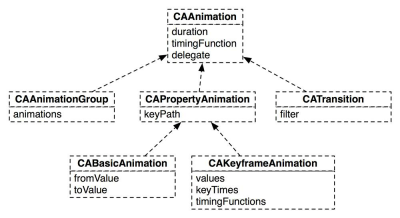
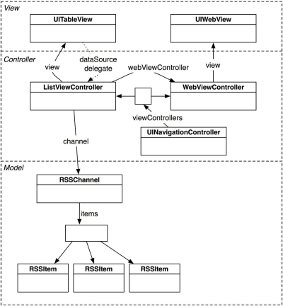
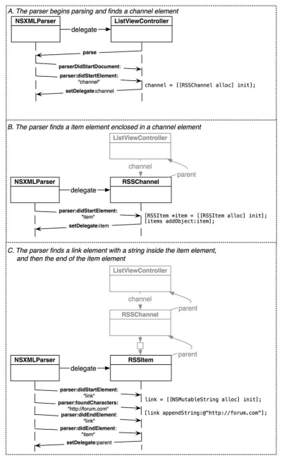
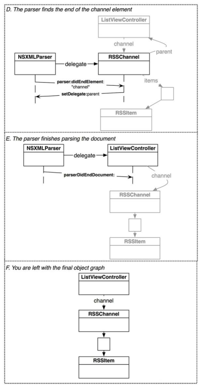

Objective-C 배우기
Table of Contents
- 1 IOS.Nerd.Ranch.Guide 제2판
- 1.1 [receiver selector: argument]
- 1.2 ObjC 에서는 함수 시그너쳐에 따른 오버로딩은 불가능하다.
- 1.3 NSMutableArray/NSArray 에 추가되는 객체의 참조카운트변화
- 1.4 ObjC 의 메소드이름은 라벨 이름을 모두 합친 것. Colon(:)의 갯수가 인자의 갯수
- 1.5 @property(애트리뷰트,애트리뷰트…)
- 1.6 @property로 속성선언, @synthesize로 속성접근함수를 정의한다.
- 1.7 copy 하게 되면 모든 NSMutableXXX 는 immutable객체로 복제된다.
- 1.8 autorelease 는 AutoReleasePool(NSAutoRelease객체?!)가 drain될 때 release.
- 1.9 ObjC 의 생성자는 -(void)init.
- 1.10 designated initializer.
- 1.11 ObjC 의 소멸자는 -(void)dealloc.
- 1.12 Target-Action vs Delegation
- 1.13 NSObject 는 protocol로서, 또 class로서 존재한다.
- 1.14 protocol 의 디폴트는 required. delegate protocol은 대부분 optional
- 1.15 delegate 속성은 (…,retain)이 아니라 (…, assign).
- 1.16 @sythesize window=_window 의 의미.
- 1.17 XCode 4.2 이상에서는 Window Based Application 이 사라졌다.
- 1.18 ARC사용시 Rule, the sad(책이 오래된 것만 있다 -_-)but the happy(일이 훨씬 간단한해진다).
- 2 IOS.Nerd.Ranch.Guide 제3판
- 2.1 4장 위임
- 2.2 5장 MapKit 과 Text Input
- 2.3 6장 UIView 와 UIScrollView 상속받기.
- 2.4 7장 View Controller
- 2.5 8장 Notification 과 Rotation
- 2.6 9장 UIITableView 와 UITableViewController
- 2.7 10장 UITableView 편집
- 2.8 11장 UINavigationController
- 2.9 12장 Camera
- 2.9.1 인터페이스 빌더에서 target-action pair 을 Ctrl-Drag 하여 생성하기
- 2.9.2 UIImageView
- 2.9.3 UIToolbar
- 2.9.4 UIImagePickerController - UIImagePickerControllerDelegate
- 2.9.5 UIView 의 presentVieController:animated:completion 메소드
- 2.9.6 UIView 의 endEditing 메소드 –> "키보드 화면에서 없애기".
- 2.9.7 NSDictionary
- 2.9.8 CoreFoundation 과 Toll-free bridge. 그리고 메모리 관리(CFRelease)
- 2.10 13장 UIPopoverController 와 Modal View Controller들
- 2.11 14장 Saving, Loading 및 Application States
- 2.12 19장 Touch
- 2.13 20장 UIGestureRecognizer 와 UIMenuController
- 2.14 22장 Core Animation Layer.
- 2.15 23장 CAAnimation 을 사용한 애니메이션
- 2.15.1 Layer를 View에 더하고, Animation을 Layer에 더하다
- 2.15.2 Animation 객체의 종류
- 2.15.3 CALayer 의 애니메이션가능 속성
- 2.15.4 KeyPath 찾는 방법
- 2.15.5 CABasicAnimation
- 2.15.6 CAKeyframeAnimation
- 2.15.7 CAAnimationGroup
- 2.15.8 CATransition
- 2.15.9 Timing Function
- 2.15.10 Animation Completion
- 2.15.11 CALayer의 Presentation Layer(그리고 Model Layer)
- 2.16 24장 UIStoryboard
- 2.17 25장 웹 서비스와 UIWebView
- 3 학습메모
- 3.1 변수이름 shadowing 문제 : 속성값방식으로 접근하기 vs 멤버변수로 접근하기
- 3.2 ARC : property attribute 와 variable qualifier
- 3.3 ARC : factory class method정의시 "이름"에 따라 컴파일러가 달리 처리한다!!!
- 3.4 무명 class extension
- 3.5 ObjC 에서 singleton 구현
- 3.6 Target-Action 은 누가 구현하고 있는가.
- 3.7
- 3.8 NSString 이 파일경로 문자열의 parse/manipulate 을 한다.
- 3.9 NSString 이 하는 일의 종류
- 3.9.1 Creating and Initializing Strings
- 3.9.2 Creating and Initializing a String from a File
- 3.9.3 Creating and Initializing a String from an URL
- 3.9.4 Writing to a File or URL
- 3.9.5 Getting a String’s Length
- 3.9.6 Getting Characters and Bytes
- 3.9.7 Getting C Strings
- 3.9.8 Combining Strings
- 3.9.9 Dividing Strings
- 3.9.10 Finding Characters and Substrings
- 3.9.11 Replacing Substrings
- 3.9.12 Determining Line and Paragraph Ranges
- 3.9.13 Determining Composed Character Sequences
- 3.9.14 Converting String Contents Into a Property List
- 3.9.15 Identifying and Comparing Strings
- 3.9.16 Folding Strings
- 3.9.17 Getting a Shared Prefix
- 3.9.18 Changing Case
- 3.9.19 Getting Strings with Mapping
- 3.9.20 Getting Numeric Values
- 3.9.21 Working with Encodings
- 3.9.22 Working with Paths
- 3.9.23 Working with URLs
- 3.9.24 Linguistic Tagging and Analysis
- 3.10 Informal Protocol
- 3.11 CoreGraphics 에 Path 의 HitTesting
- 3.12 Qt의 "Fit" 또는 "ResizePolicy" 가 Quartz에서는 "Contents Gravity"
- 3.13 UIImage 의 imageNamed: 메시지는 cached 된 이미지를 반환한다.
- 3.14 CGContextRef(Graphics Context - "GD")를 얻는 방법
- 3.15 어떤 클래스의 생성자 찾는 방법 - 그 클래스에 없는 생성자도 있네?!
- 3.16 어떤 Delegate 는 문서에는 없어도 존재하네?!?!
- 3.17 UIAlertView : 간단한 메시지 상자.
- 3.18 유용한 UIControl 샘플 예제 : "UICatalog"
- 3.19 #pragma - some-useful-information-for-xcode-navigation-bar
- 4 Apple 공식문서 코스워크 순서
1 IOS.Nerd.Ranch.Guide 제2판
1.1 [receiver selector: argument]
- receiver : 객체에 대한 pointer
- selector : method 를 호출하기 위한 이름
- argument : method에 사용되는 것.
[arrayInstance replaceObjectsInRange:aRange withObjectsFromArray:anotherArray range:anotherRange];receiver=arrayInstacne selector=replaceObjectsInRange, withObjectsFromArray, range argument=aRange, anotherArray, anotherRange
1.2 ObjC 에서는 함수 시그너쳐에 따른 오버로딩은 불가능하다.
이를테면, C++ 에서는
void add(int a, int b); void add(double a, double b);
같은 것이 가능하지만, ObjC 에서는 불가능하다. 대신
@interface MyCalc : NSObject +(int)add:(int)a withInt:(int)b; +(double)add:(double)a withDouble:(double)b; @end @implementation MyCalc +(int)add:(int)a withInt:(int)b { return a+b; } +(double)add:(double)a withDouble:(double)b { return a+b; } @end
이런식으로 각각의 라벨을 하나로 합친 것(즉, 위의 경우, add:withInt: add:withDouble: –> 이걸 selector 라고 하는 것 같다) 이름이 다른 경우에는 ok.
1.3 NSMutableArray/NSArray 에 추가되는 객체의 참조카운트변화
ObjC 에서는 배열(NS*Array 클래스)이 값을 담는게 아니다. 어떤 객체의 포인터를 담는다. 그런데, 포인터의 타입을 고정하지 않는다. 따라서, 서로 다른 타입의 객체에 대한 포인터를 담을 수 있다. 이런 경우, 참조되는 객체의 참조카운트가 +1 된다(retain). 배열이 파괴될 때는 각 배열 항목들이 갖는 포인터의 참조카운트가 -1 된다(release).
1.4 ObjC 의 메소드이름은 라벨 이름을 모두 합친 것. Colon(:)의 갯수가 인자의 갯수
셀렉터 하나당 인자 1개. 2개 이상은 사용을 못한다. 결국 2개 이상의 인자를 받는 메소드는 여러개의 라벨로 이루어진 selector가 된다. 인자가 없는 경우는 colon(:)이 없는 selector.
1.5 @property(애트리뷰트,애트리뷰트…)
- atomicity : atomic 또는 nonatomic. 디폴트는 atomic인데, 이 책에서는 항상 nonatomic을 사용한단다. 왜그런지는 이책의 범위를 넘는다.
- writability : 티폴트는 readwrite. 종종 readonly
- memory management : 디폴트는 assign. 참조카운트를 다루는 객체에 대해서 retain 혹은 copy 들 쓰는데, mutable객체에 대해서는 보통 copy를 사용한다(retain을 쓸 경우, 공유되는 객체의 값이 바뀌면, 함께 바뀌기 때문이다).
1.6 @property로 속성선언, @synthesize로 속성접근함수를 정의한다.
- @property로 선언한 속성에 상응하는 @synthesize 가 있어도 되고 없어도 된다. 없는 경우에는 사용자 정의 속성함수가 있어야 된다.
- @property로 선언한 속성값이 @interface {} 안에 선언되어 있지 않아도 된다.
- @property로 선언한 속성값의 명칭이 @interface {} 안에 선언된 다른
명칭의 멤버를 가르키도록 할 수 있다.
@synthesize myVar = anotherVar와 같이 하면 된다. - @synthesize 로 속성을 정의했더라도, 사용자 정의 속성함수를 정의할 수 있다(사용자 정의 함수가 우선적으로 사용됨).
- @property 없이 @sythesize 만 사용하는 건 안되는 …
1.7 copy 하게 되면 모든 NSMutableXXX 는 immutable객체로 복제된다.
NSMutableArray를 copy 하면 NSArray가 생긴다. 그대로 NSMutableArray로 복제하려면, mutableCopy 를 해야 한다.
*모든 클래스에 mutable 버젼이 있는 건 아니며, copy될 수 없는 객체형도 있다는 점*을 유의하자.
1.8 autorelease 는 AutoReleasePool(NSAutoRelease객체?!)가 drain될 때 release.
release 는 즉시 –retainCount, autoRelease 는 나중에 –retainCount; ARC를 사용하는 경우에는 autorelease는 compiler가 해준다. 사용할 필요가 없다.
1.9 ObjC 의 생성자는 -(void)init.
맨 먼저 [super init]. 그런 다음 자기 자신에 대한 초기화. 하지만,
보통은 designated initializer 를 두고 거기에서만 [super init] 한다.
ARC 를 사용하는 경우, self = [super init]; 이런식으로 self 값에
super의 init 결과를 대입하여야 한다. 그리고, self 가 null 인지 확인
한 후 접근해야 한다.
1.10 designated initializer.
initWithName:withSerialNumber:withBirth 와 같이 멤버같들 전체에 대한 초기화 방식을 제공하는 편의함수를 두고 이걸 designated initializer라고 정해 둔다. 그리고 나머지 init.* 함수들이 이 designated initializer 를 호출하는 식으로 구현되도록 한다. [super init] 은 반드시 이 desginated initializer를 어떤 기본값으로 호출하도록 구현하는 식으로 한단다.
1.11 ObjC 의 소멸자는 -(void)dealloc.
자기 자신의 멤버들에 대해 release 하는 코드가 보통 들어간다. [super dealloc] 은 맨 마지막에!!!! –> ARC를 사용하는 경우 이 호출은 compiler error. 호출할 수 가 없다(그에 상응하는 코드를 comiler가 해준다?!)
1.12 Target-Action vs Delegation
Target-Action 은 꼭 Qt 의 signal slot 과 유사해 보인다. Delegation 은 C++ 의 인터페이스와 유사해 보인다.
Delegation 은 "Protocol" 이라 불리우는 정해진 일련의 메소드 목록(ObjC 에서는 메시지 목록이 되겠다)을 통지하는 쪽에서 호출하지만, Target-Action 은 연결된 1쌍의 호출("Target" 으로 하여금 "Action"을 수행하도록 메시지 전달)함.
1.13 NSObject 는 protocol로서, 또 class로서 존재한다.
ObjC에서는 동일한 이름의 protocol 과 class 모두 존재할 수 있나보다. NSObject.h 에는 … @protocol NSObject 도 있고, @interface NSObject<NSObject> 도 있다(즉, NSObject 프로토콜을 confirm하는 NSObject Class).
1.14 protocol 의 디폴트는 required. delegate protocol은 대부분 optional
@protocol 로 선언된 인터페이스중 delegate 의 역할을 하는 경우는 보통 @optional 을 사용해서 선언된다. 그런 경우에 구현은 CLLocationManager 의 예를 들면 다음과 같단다.
아래의 코드는 실제 구현과는 다르지만 개념적인 구현이라 할 수 있다.
-(void)finishFindingLocation:(CLLocation*)newLocation { // locationManager:didUpdateToLocation:fromLocation: 이란 selector 를 통해 // 해당 메시지를 특정 객체가 받을 수 있는지 확인한다. SEL updateMethod = @selector (locationManager:didUpdateToLocation:fromLocation:); // 만일 메소드가 구현되어 있다면, 메시지를 보낸다. if ([[self delegate] respondsToSelector:updateMethod]) { // 메시지 전송 [[self delegate] locationManager:self didUpdateToLocation:newLocation fromLocation:oldLocation]; } }
1.15 delegate 속성은 (…,retain)이 아니라 (…, assign).
블라블라 매니저의 delegate속성은 assign. retain으로 하는 경우 상호retain할 가능성이 생긴다(블라블라 매니저를 생성/소유하는 놈이 보통 delegate인 경우가 많기때문에.).
책에서는
// CLLocationManager @property (nonatomic, assign) id delegate;
라는 식으로 선언되었을 거라고 했지만, 찾아보니..
@property(assign, nonatomic) id<CLLocationManagerDelegate> delegate;
라는 식으로 되어 있네….
1.16 @sythesize window=_window 의 의미.
StackOverflow 에 있는 Q/A 에서 찾은 내용.
Application Delegate class의 *.m 파일에서
@synthesize window=_window
와 같은 부분이 자동으로 들어간 채로 프로젝트가 생성되는데,
- Q : 왜 @interface 에 _window 라는 변수가 선언되지 않았는가? A : @synthesize window=_window 하면 자동으로 _window 생성된다(?)
- Q : 왜 굳이 @synthesize window=_window 를 쓰나? A : ObjC 언어규약상 window 라는 속성의 내부변수(ivar 라고 한다)는 원래의 속성이름과 동일한 이름의 변수명이 쓰인다(즉, "window"). 하지만, 그것 대신 "_window"를 ivar 로 사용하기 위함이다.
- Q : 그럼 [self window] 와 _window 는 무슨 차이가 있는가? A : [self window] 는 getter속성함수로 접근한거고, _window 는 ivar를 직접 접근한거다.
- Q : 왜 2가지 방법을 쓰게 되나? A : dealloc 과 같은 함수에서는 접근메소드를 호출하는 것이 안전하지 않다고 생각되어지고 있다. 이경우 ivar 를 직접사용하는 것이 더 선호된다고 한다.
1.17 XCode 4.2 이상에서는 Window Based Application 이 사라졌다.
- Empty Application 을 만든다.
- main.m 함수를 다음과 같이 고친다.
int main(int argc, char* argv[]) { @autoreleasepool { // return UIApplicationMain(argc, argv, nil, NSStringFromClass([AppDelegate class])); return UIApplicationMain(argc, argv, nil, nil); } }
- File > New 에서 Empty User Interface(*.xib) 를 생성하고, 이름을 MainWindow 이런식으로 짓는다.
- project속성에서 target을 선택한 다음, summary 중 Main Interface를 MainWindow 로 변경한다.
- AppDelegate 의 window 속성앞에 IBOutlet 을 입력한다.
- MainWindow.xib 파일을 열고 Interface Builder 에서 여기 의 설명을 참조하여 설정한다(File's Owner의 class를 UIApplication으로. AppDelegate용 Object를 추가. Window를 추가. delegate를 AppDelegate로 연결. AppDelegate의 window변수를 ui상의 window에 연결…)
- 라벨같은거 하나를 window에 추가한다음, 실행하여 xib의 화면이 잘 나오는지 확인.
- 가급적이면, 여기 있는 설명을 무시하고, UIViewController 를 사용하는 Single View Application 을 사용하도록 한다
1.18 ARC사용시 Rule, the sad(책이 오래된 것만 있다 -_-)but the happy(일이 훨씬 간단한해진다).
ARC 를 사용하게 되면서 새로운 룰이 생겼다.
To work, ARC imposes some new rules that are not present when using other compiler modes. The rules are intended to provide a fully reliable memory management model; in some cases, they simply enforce best practice, in some others they simplify your code or are obvious corollaries of your not having to deal with memory management. If you violate these rules, you get an immediate compile-time error, not a subtle bug that may become apparent at runtime.
- You cannot explicitly invoke dealloc, or implement or invoke retain, release, retainCount, or autorelease. The prohibition extends to using @selector(retain), @selector(release), and so on.
- You may implement a dealloc method if you need to manage resources other than releasing instance variables. You do not have to (indeed you cannot) release instance variables, but you may need to invoke [systemClassInstance setDelegate:nil] on system classes and other code that isn’t compiled using ARC.
- Custom dealloc methods in ARC do not require a call to [super dealloc] (it actually results in a compiler error). The chaining to super is automated and enforced by the compiler.
- You can still use CFRetain, CFRelease, and other related functions with Core Foundation-style objects (see “Managing Toll-Free Bridging”).
- You cannot use NSAllocateObject or NSDeallocateObject.
- You create objects using alloc; the runtime takes care of deallocating objects.
- You cannot use object pointers in C structures.Rather than using a struct, you can create an Objective-C class to manage the data instead.
- There is no casual casting between id and void *.
You must use special casts that tell the compiler about object lifetime. You need to do this to cast between Objective-C objects and Core Foundation types that you pass as function arguments. For more details, see “Managing Toll-Free Bridging.”
- You cannot use NSAutoreleasePool objects.
ARC provides @autoreleasepool blocks instead. These have an advantage of being more efficient than NSAutoreleasePool.
- You cannot use memory zones. There is no need to use NSZone any more—they are ignored by the modern Objective-C runtime anyway.
To allow interoperation with manual retain-release code, ARC imposes a constraint on method naming:
- You cannot give an accessor a name that begins with new. This in turn means that you can’t, for example, declare a property whose name begins with new unless you specify a different getter:
2 IOS.Nerd.Ranch.Guide 제3판
4장 위임(Delegation)부터 다시 시작 :(
2.1 4장 위임
2.1.1 프로젝트를 구성하는 것.
- project
여러 파일들에 대한 목록을 가진 파일 + 여러가지 규칙
- files(project구성요소)
소스코드 + 리소스 + 프레임웍 + 라이브러리
- target
project내의 파일들을 사용해 product를 빌드/실행하기 위한 대상
- product
target을 빌드하면 나오는 application 또는 library 또는 unit test bundle
- build phase
target에는 build phase설정이 포함된다. 어떻게 빌드할 것인지에 대한 설정.
- Compile Source
- Link Binary With Libraries
- Copy Bundle Resource
- framework
target 에 추가할 수 있는 연관된 클래스들의 집합. Cocoa Touch 같은거. 헤더/링크라이브러리 들을 하나의 단위로 쉽게 target 에 추가할 수 있게 된다.
- UIKit Framework : iOS 의 UI 라이브러리
- Foundation Framework : NSString, NSArray …
- CoreGraphics Framework : 그래픽 라이브러리….
- CoreLocation Framework : 위치기반 서비스
2.2 5장 MapKit 과 Text Input
2.2.1 @protocol 에 대해 추가 학습
- 프로토콜은 데이터 멤버는 포함하지 못해도 속성을 포함할 수 있다.
- 프로토콜이 어떤 속성을 필수항목으로 지정하게 되면, conforming class 는 그 속성값을 @synthesize 하는 방식으로 구현하면 된다. 단, 상수값을 리턴하는 경우면, 단순히 getter() 함수를 만들고 상수값을 리턴할 수 도 있다.
- 프로토콜이 어떤 속성을 선택항목으로 지정하게 되면, confirming class 는 그 속성값을 아예 안써도 된다. @synthesize 하지 않아도 된다.
- 프로토콜이 readonly 로 지정한 속성을 그냥 동일하게
@property/@synthesize 하게 되면, confirming class 의 메쏘드내에서
[self setPropertyValue:value]할 수 없다. 그런 경우에는@property (..., readwrite) ...로 바꾸던지(어쨌든 readwrite 도 read를 포함하니까), 아니면 confirming class 메쏘드 내에서는propertyValue = value이런식으로 프로퍼티 직접접근을 해야 한다. - 프로토콜이란걸 "계약"으로 생각하면 될 것 같다. 그 계약사항을 지킬 수 있기만 한다면, 어떻게 구현해도 상관이 없다..는 식으로 설명을 들었다.
2.2.2 UITextField 와 First Responder
- 모든 위젯은 UIResponder > UIView > UIControl 이런식으로 상속을 받는다.
- UITextField 위젯은 UIControl 의 자식클래스
- 모든 UIResponder 들은 First Responder 개념이 있단다. 화면에서 보이는 위젯 들 중 어떤 이벤트를 우선적으로 맨 먼저 받는 놈이 First Responder
- UITextField 위젯은 독특하게, First Responder가 되면(즉, 사용자가 이넘을 탭핑하면…) 화면에 키보드가 표시된다.
- UITextField 의 resignFirstResponder 메시지는 자기 자신이 First Responder의 지위를 잃게 만든다 –> 화면에 표시되던 키보드가 사라진다.
2.2.3 ARC 가 있어 메모리 관리가 편해지긴 했지만….
- WhereAmI 예제에서 CLLocationManager 객체의 delegate멤버는 strong도 weak 포인터도 아니다(설명에 따르면 _unsafe_unretained 라는데 실제 헤더에 가보면 assign-구시대의 유물-으로 되어 있다). 이건 ARC 가 없던 시절의 것과 동일하단다(하위 호환성). 따라서, delegate의 값을 nil 로 설정하지 않으면 절대 delegate가 가리키는 객체의 retain count가 -1 되지 않으며, 결과적으로는 할당해제되지 않는다. 반드시 dealloc을 재정의 하고, 거기서 [locationManager setDelegate:nil] 을 해 주어야 한다
2.3 6장 UIView 와 UIScrollView 상속받기.
- 상속관계 : UIWindow < UIView < UIResponder < NSObject.
- UIWindow 위에 UIView들이 놓이며, UIWindow 역시 UIView로서 모든 UIView의 최상위 View. Superview-Subview 개념으로 계층관계존재(좌표계등).
2.3.1 UIView 에 동그라미와 텍스트 그리기
CGContextRef context = UIGraphicsGetCurrentContext();로 시작- CGContext 로 시작하는 단어를 iOS 문서에서 찾으면 Draw2D 관련 함수목록을 얻을 수 있음.
- CGContextAdd{Shape} 식으로 도형을 추가하고, CGContextStrokePath() 로 선분을 그린다. 한번 그리고 나면 추가된 도형들은 리셋된다(또 그리려면 다시 Add 해야 한다).
- NSString 은 자기 자신을 CGContext에 draw 할 수 있다.
- NSString 은 자기 자신이 draw될 때 크기가 얼마만한지 알 수 있다.
- UIColor 는 자기 자신을 CGContext에 fill(브러시 색상), stroke(펜 색상) 설정할 수 있다.
- 하지만 모든 작업을 위와 같이 할 수는 없다. ex: CGContextSetShadowWithColor
2.3.2 UIView의 setNeedsDisplay 메시지(win32의 무효화개념).
계층관계를 고려하여 CocoaTouch의 run loop 이 화면 갱신을 최적화한다. run loop 이 한번 돌때마다 아래와 같은 대화가 오간다. :)
"음, 많은 코드들이 막 실행되었군. 혹시 어떤 view가 다시 그려져야할 필요가 있는지 확인해봐야지"
그려져야 할 필요가 있는 UIView 파생클래스의 객체는
-(void)drawRect:(CGRect)dirtyRect 메시지를 받는다.
그럼 각 UIView들은
CGContextRef context = UIGraphicsGetCurrentContext();
및
CGRect bounds = [self bounds];
로 코드를 시작한다(그리려는 컨텍스트와 자신의 전체 사각형크기(사실은 dirtyRect 인자를 쓰는게 더 좋겠지만)가 필요하다.
2.4 7장 View Controller
여기서는 UIViewController 와 UIView 와의 관계, XIB의 File Owner의 의미, view가 로딩되는 방법에 대해 배운다.
2.4.1 UIWindow / UIViewController 생성
UIResponder<UIApplicationDelegate> 파생클래스 XxxAppDelegate의 didFinishLaunchingWithOptions 메소드에서
- UIWindow 를 화면크기만하게 만든다 –> self.window 가 된다.
- UIViewController 를 필요한 만큼 만든다
- [옵션] UITabBarController 를 만든다
- UIViewController 중 1개 -> self.rootViewController 가 된다.
- self.window 에 makeKeyAndVisible 메시지 전송하여 띄운다.
- [옵션] 각 UIViewController 의 initWithNibName:bundle: 을 오버라이딩하고 self.tabBarItem 의 image 와 title을 설정한다.
2.4.2 각 UIViewController 들 view 를 생성하는 방법
- manual 생성시
- initWithNibName:bundle: 을 오버라이딩한다.
- UIViewCOntroller 의
-(void)loadView를 오버라이딩한다 - loadView 의 원래 구현은 XIB파일을 사용하는 것이므로 호출하면 안된다.
- 직접 view를 alloc / init 하여 만든다.
- xib 사용시
- initWithNibName:bundle: 을 오버라이딩한다.
- IBOutlet 으로 추가한 view 들에 대한 모든 outlet 은 __weak 로
한다(혹 뷰가 메모리에서 unload되는 현상이 생길때, 이게 strong 이면 절대 subview들이 제거되지 않는다).
사실 Apple 문서 에 따르면, IBOutlet 은
@property(weak,...) IBOutlet...이런식으로 저장되는게 좋다고 한다. 물론, 이 얘는 UIViewController 의 view 속성과 같은 topLevel 속성이나, 사용자가 생성/삭제를 반복하는 view에는 적용X (이것들은 strong이 바람직)
2.4.3 IOS6.0 이후 부터는 메모리 여분이 부족해도 view 를 unload 하지 않는다.
이전처럼 동작하게 하려면 didReceiveMemoryWarning 을
오버라이딩해서 이전처럼 동작하는 부분을 구현해야 한단다.
Memory Management Memory is a critical resource in iOS, and view controllers provide built-in support for reducing their memory footprint at critical times. The UIViewController class provides some automatic handling of low-memory conditions through its didReceiveMemoryWarning method, which releases unneeded memory. Prior to iOS 6, when a low-memory warning occurred, the UIViewController class purged its views if it knew it could reload or recreate them again later. If this happens, it also calls the viewWillUnload and viewDidUnload methods to give your code a chance to relinquish ownership of any objects that are associated with your view hierarchy, including objects loaded from the nib file, objects created in your viewDidLoad method, and objects created lazily at runtime and added to the view hierarchy. On iOS 6, views are never purged and these methods are never called. If your view controller needs to perform specific tasks when memory is low, it should override the didReceiveMemoryWarning method.
2.4.4 view 는 화면표시/제거 되는 각 단계별로 통지 메시지가 있다.
UIViewController 에 특정 메시지가 도착한다.
- view 화면표시되기 직전 : viewWillAppear
- view 화면표시직후 : viewDidAppear
- view 화면제거되기 직전 : viewWillDisappear
- view 화면제거직후 : viewDidDisappear
2.5 8장 Notification 과 Rotation
2.5.1 Notification
시간이 되면 알람이 표시되고 메시지가 푸시되는 아이폰에서의 시각적 통지와는 다른 개념임. 한 코코아 객체가 다른 객체에게 무언가를 알려주기 위한 매커니즘. 코코아에서는 브로드캐스팅 모델이 사용된다. –> UI의 target-action 이나 delegation과 같이 한 곳에서 다른곳으로의 메시지 전달을 위한 다자인 패턴에 속한다.
- NSNotificationCenter객체로의 post 는 Win32의 post개념과는 달리 *동기적*이다.
- NSNotificationQueue를 사용하면 비동기적으로 post할 수 있다.
anObject(NSObject*)
-- post -->
defaultCenter(NSNotificationCenter*)
-- broadcast ->
여러 NSObject* 객체
post내용(NSNotification*) = name(NSString*)
+ poster(NSObject*)
+ userInfo(NSDictionary*))
2.5.2 UIDevice의 Notification
모든 통지 가능한 클래스들은 각 클래스 문서의 "Notification" 부분에서 자신의 통지가능한 목록을 찾아볼 수 있다.
또 UIDevice 와 같이 몇몇 클래스들의 통지는 특정 속성의 값 및 특정 함수의 호출여부에 따라 통지여부가 결정되기도 한다.
예를들어 UIDevice의 아래의 통지를 가지고 있다.
- UIDeviceOrientationDidChangeNotification
- UIDeviceBatteryStateDidChangeNotification
- UIDeviceBatteryLevelDidChangeNotification
- UIDeviceProximityStateDidChangeNotification
이 중에서 예를 들어 UIDeviceOrientationDidChangeNotification 통지는 beginGeneratingDeviceOrientationNotifications 함수가 호출된 상태에서 통지가 이루어진다.
*주:beginGeneratingDeviceOrientationNotifications 함수는 종종 endGeneratingDeviceOrientationNotifications 함수와 쌍을 이루어 호출이 이루어져야 한다.(Nested call도 가능하지만, 항상 쌍을 이루어 호출이 되어야 한다).
2.5.3 @selector 구문
@selector(colon을 포함한 메소드명) –> 함수포인터 같은 역할을 한다. 이름이 완벽히 맞아야 되며, 그렇지 않은 경우 crash 발생한다.
ex: @selector(didOritientationChange:)
2.5.4 Rotation 발생시 view 처리 : 결국 Resizing 처리(가로/세로가 바뀌므로)
XCode 4.3 이후 부터는 xib 파일의 file inspector 에 autoresizing 이 디폴트로 변경되었다. 섬세한(?) 처리를 위해 autoresizing 체크박스를 끄면, size inspector 에서 4각형의 각 edge부분에 대한 strut 과 가로/세로방향의 resize 여부를 따로 따로 조정이 가능하다.
UIView의 autoresizingMask 속성 값은 bitwise flag로 다음의 설정값 조합이 가능하다.
enum { UIViewAutoresizingNone = 0, UIViewAutoresizingFlexibleLeftMargin = 1 << 0, UIViewAutoresizingFlexibleWidth = 1 << 1, UIViewAutoresizingFlexibleRightMargin = 1 << 2, UIViewAutoresizingFlexibleTopMargin = 1 << 3, UIViewAutoresizingFlexibleHeight = 1 << 4, UIViewAutoresizingFlexibleBottomMargin = 1 << 5 };
실제로 해보면 autoresizing 보다 이런 방식의 조정이 훨씬 더 유연해 보였던 것 같다.
2.5.5 UIViewController 의 willAnimateRotationToInterfaceOrientaion duration
디바이스가 돌아가면, 이 함수가 호출되면서 view controller 가 제어하는 view 내의 각 subview들의 움직임을 제어한다. 이걸 오버라이딩 하면, 디바이스가 돌아간 방향에 따라 전혀 다른 view 를 표시할 수 있다. (ex:계산기 어플)
2.5.6 Proximity : 휴대폰을 얼굴 가까이 갖다 댄 정도에 대한 센서
[[UIDevice currentDevice] setProximityMonitoringEnabled:YES] 하면
2.6 9장 UIITableView 와 UITableViewController
2.6.1 Singleton 구현방법
모든 alloc 함수(사실 alloc 과 allocWithZone 2개인데 alloc은 allocWithZone을 호출하는 식으로 구현될 것이므로 실제로는 allocWithZone함수 1개)를 재정의하여 singleton을 반환하도록 한다.
2.6.2 UITableViewController
UIViewController 로 XIB에 UIView를 만들고 그 안에 UITableView 를 넣는 식의 작업을 할 때는 쓸 수 없지만, IPhone에 많이 보는 TableView + Header View 정도의 구성은 할 수 있는 게 UITableViewController. UITableDataSource도 confirm 하지만, 꼭 UITableViewController 에 data source를 구현할 필요는 없다. 별도의 자료구조가 있다면, 그것 자체에 UITableDataSource 를 confirm 하도록 해 도 되었다.
2.7 10장 UITableView 편집
2.7.1 노트
- XIB파일은 각 UIViewController 가 자신이 가지고 있는 view 속성을 top-level view로 하는 UI를 생성하는데 사용된다. view 속성의 존재상태에 따라 실제 view의 생성/소멸이 결정되므로, strong ref. 나머지 subview들에 대한 객체변수는 weak(이미 UIView자체에서 superview-subview 관계로 strong 관계가 맺어져 있다).
- XIB 파일은 view controller가 생성될 때 불러들여져서 view객체들을
생성하는 게 일반적이지만, XIB파일의 owner로서 임의 시점에
호출되어 view생성을 시킬 수 도 있다. (여기서는 headerView를
그렇게 만들었다).
만들때는 [[NSBundle mainBundle] loadNibNamed:@"View명칭" owner:self options:nil] 이런식으로 하면, xib파일의 view에 대한 holder(대개 UIViewController의 view속성이지만, 여기서는 headerView라는 strong속성)가 지정된 경우, 그 strong ref에 대한 view객체가 주욱 생성된다.
- UITableViewDelegate
- (UIView*)tableView:viewForHeaderInSection:
- (CGFloat)tableView:heightForHeaderInSection: -> 각 섹션헤더 높이 질의
- (CGFloat)tableView:heightForRowAtIndexPath: -> 각 열의 높이를 질의
- UITableView 의 setEditing:animated 를 호출하면 tableView의 editing 상태를 제어할 수 있다(각 열의 왼쪽부분에 빨간 동그라미에 - 표시가 생긴다. Lock표시다. Lock해제하면 항목을 지울 수 있다).
2.7.2 편집모드시 기억사항
UITableViewDataSource 프로토콜 구현 클래스에 tableView:commitEditingStyle:forRowAtIndexPath 를 구현할 때, Data source가 관리하는 원본 자료구조에 대한 변경을 가한 후 tableView의 아이템이 삭제되도록 해야 하더라.
-(void) tableView:(UITableView *)tableView commitEditingStyle:(UITableViewCellEditingStyle)editingStyle forRowAtIndexPath:(NSIndexPath *)indexPath { NSLog(@"commitEditingStyle for row(%d) section(%d)", [indexPath row], [indexPath section]); // 삭제동작인 경우.... if (editingStyle == UITableViewCellEditingStyleDelete) { // 원본 자료구조 변경 [itemArray removeObjectAtIndex:[indexPath row]]; // table view 에서 항목 삭제 [tableView deleteRowsAtIndexPaths:[NSArray arrayWithObjects:indexPath,nil] withRowAnimation:YES]; } }
항목 추가도 마찬가지. 다만, 이 장에서는 UITableView 의 초록색 + 동그라미 버튼을 이용한 것이 아니라서 그런지 tableView:commitEditingStyle:forRowAtIndexPath 를 통해서 추가되는 게 아니고, 버튼을 누르면 자료구조에 1개추가 하고 난 다음 UITableView 에는 insertRowsAtIndexPaths:withRowAnimation: 메시지를 통해 따로 따로 갱신을 하였다.
항목이동은 단지 UITableViewDataSource 구현 클래스가 tableView:moveRowAtIndexPath:toIndexPath 메소드를 구현하기만 하면 UITableViewCell 에 자동으로 아디다스 3줄짜리 이동 핸들이 Editing상태에서 표현되고, 그걸로 잡아끌면 이동이 가능해 진다.
2.8 11장 UINavigationController
2.9 12장 Camera
2.9.1 인터페이스 빌더에서 target-action pair 을 Ctrl-Drag 하여 생성하기
이 장에서는 interface builder 와 assistant editing 을 사용해 Ctrl-Drag 동작으로 UIView 의 target-action pair 를 쉽게 구성하는 방법이 나온다.
- Command-1 : Project Navigator
- xib 파일 클릭 : Main Edtior 에 파일이 열림
- xib 파일의 owner 파일(동일이름의 *.h 파일)을 Option-클릭 : Assistant Editor 에 파일이 열림
- 특정 UIView 를 Ctrl-Drag 하여 Assistant Editor의 소스코드 특정 라인으로 드래그하여 Action 생성
2.9.2 UIImageView
UIImageView는 사진을 표시하는 view.
2.9.3 UIToolbar
UINavigationBar 와 상당히 유사하지만, UIToobar는 버튼 2개가 아니라 배열로 여럿을 가질 수 있음. 버튼은 UIBarButtonItem. IB 에서 Identifier 를 Camera 를 선택하면, 아이콘 모양이 늘 보던 그 카메라 모양이 뜨더라.
2.9.4 UIImagePickerController - UIImagePickerControllerDelegate
UIImagePickerController 은 카메라를 촬영하여 혹은 찍은 사진으로 부터 이미지를 가져올 수 있게 하는 controller.
- SourceType : Camera, PhotoLibrary, SavedPhotosAlbum 의 3가지(ex: UIImagePickerControllSourceTypeCamera)
- isSourceTypeAvailable 메소드로 Camera 지원여부 확인가능
UIImagePickerControllerDelegate 는 Controller 로 부터 통지를 받는다.
imagePickerController:didFinishPickingMediaWithInfo:: 이미지가 촬영되거나 선택되었을 때 호출됨.- delegate 는 id<UIImagePickerControllerDelgate> 이기만 하면
되는게 아니라 id<UINavigationControllerDelegate, UIImagePickerControllerDelegate> 여야 하는 이유.
–> UIImagePickerController 는 UINavigationController 의 파생클래스이기 때문에, 그렇다는군. 실제로 "UIImagePickerController.h" 파일을 열어보면 delegate의 형이 다음과 같이 선언되어 있음.
@property(nonatomic,assign) id <UINavigationControllerDelegate, UIImagePickerControllerDelegate> delegate;
2.9.5 UIView 의 presentVieController:animated:completion 메소드
(이 부분 설명은 XCode문서 "Presenting View Controllers from Other View Controllers" 를 보고 정리한것)
하나의 view controller 는 다른 view controller 를 이어서 'present' 즉 화면에 표시할 수 있다. 이는 마치 부모 윈도우가 자식 윈도우를 팝업시키는 것하고 비슷하다.
그 어떤 view controller 라도 한번에 하나의 view controller 를 present 할 수 있다. 그럼 새로 presented 된 view controller 는 사용자 입장에서는 맨 위에 놓인 view controller 가 된다.
또한 Presenting View 와 Presented View 가 서로에 대한 관계를 포인터로 가지고 있고, modality 의 종류도 FullScreen, PageSheet, FormSheet 의 몇가지가 있다. (IPad에서는 다 쓰이지만, IPhone 에서는 주로 FullScreen 이 쓰인다).
어떤 view controller 를 present 하려면 다음 순서로 한다.
- 어떤 view controller 'B' 에서 다음을 수행하게 된다.
- present 하려는 view controller 'A' (="presented view controller") 를 생성한다.
- 'A' 의 modalTransitionStyle 속성을 설정한다.
- 'A' 의 delegate 를 지정한다. 대개는 'B' 가 delegate가 된다.
- 'B' 의 메소드에서 'B'의 presentViewController:animated:completion: 메소드를 호출하되, 생성되어 있는 'A' 객체를 넘겨준다.
예는 다음과 같다.
// 이미지 설정하기 버튼을 누르면 호출되는 action -(IBAction) takePicture:(id)sender { UIImagePickerController *imagePicker = [[UIImagePickerController alloc] init]; [imagePicker setDelegate:self]; [self presentViewController:imagePicker animated:YES completion:nil]; } // 나중에 다른 함수에서, 위에서 presented 된 view controller 를 // dismiss 시킨다. -(void) imagePickerController:(UIImagePickerController *)picker didFinishPickingMediaWithInfo:(NSDictionary *)info { // .... 기타 작업 [self dismissViewControllerAnimated:YES completion:nil]; }
Qt 에서 표준대화상자를 구비하고 있는 것 과 마찬가지로, iOS 에서는 표준 view controller 를 구비하고 있으며, 이걸 써서 표준이 되는 view 를 화면에 표시할 수 있다.
| Framework | View controllers | 설명 |
|---|---|---|
| Address Book UI | ABNewPersonViewController | |
| ABPeoplePickerNavigationController | ||
| ABPersonViewController | ||
| ABUnknownPersonViewController | ||
| Event Kit UI | EKEventEditViewController | |
| EKEventViewController | ||
| Game Kit | GKAchievementViewController | |
| GKLeaderboardViewController | ||
| GKMatchmakerViewController | ||
| GKPeerPickerController | ||
| GKTurnBasedMatchmakerViewController | ||
| Message UI | MFMailComposeViewController | |
| MFMessageComposeViewController | ||
| Media Player | MPMediaPickerController | |
| MPMoviePlayerViewController | ||
| UIKit | UIImagePickerController(이장에서 쓴거) | 카메라 |
| UIVideoEditorController | 비디오 |
2.9.6 UIView 의 endEditing 메소드 –> "키보드 화면에서 없애기".
IB 에서 제일 상위의 View 를 UIControl 로 변경한다음, 이 UIControl에
대한 Touch up 이벤트 핸들러를 owner view controller 에 만든다.
거기서 단순히 아래와 같이 endEditing:YES 만 호출하면 화면상의
first responder 가 자기 자신으로 바뀌면서 키보드가 사라진다.
- (IBAction)backgroundTabbed:(id)sender { // 사실 sender 가 [self view] [[self view] endEditing:YES]; }
2.9.7 NSDictionary
다른 언어와 마찬가지로 여기 dictionary타입인 NSDictionary 역시 key-value pair를 저장.
// "MyKey" 라는 문자열 키 값에 대한 값으로 someObject 객체를 지정 [someDictionary setObject:someObject forKey:@"MyKey"]; // "MyKey" 란 키에 해당하는 값(객체)을 얻음 id myObject = [someDictionary objectForKey:@"MyKey"];
2.9.8 CoreFoundation 과 Toll-free bridge. 그리고 메모리 관리(CFRelease)
CoreFoundation 은 CF 로 시작하는 함수들과 CF*Ref 형식의 opaque pointer 로 구성되어 있는 C 형식의 객체지향 프레임웍. CF*Create() 함수로 CF*Ref 객체를 만들고, 파괴할 때는 CF*Release() 로 한다.
CF*Ref 형식의 객체는 그에 상응하는 ObjC 타입이 있으며, 그 둘 간에는 메모리내에서의 레이아웃이 일치하도록 되어 있다. 따라서 이 두가지 타입간에는 형변환이 가능하다. 이를 toll free bridge 라고 한단다.
ARC를 사용하는 ObjC 컴파일러에게 형변환된 객체에 대하여 retain 처리를 하지 않도록 알려주기 위해 toll-free bridge 시 __bridge 라는 지시어를 써준다.
CFUUIDRef uuid = CFUUIDCreate(kCFAllocatorDefault); CFStringRef uuidString = CFUUIDCreateString(kCFAllocatorDefault, uuid); // Toll-free bride NSString *key = (__bridge NSString *)uuid; // key 를 사용 CFRelease(uuid); CFRelease(uuidString);
2.10 13장 UIPopoverController 와 Modal View Controller들
이 chapter 부터 iPad 에 대한 내용이 시작됨.
2.10.1 유니버설 바이너리
프로젝트 설정에서 iPhone 으로 되어 있던 Device를 Universal 로 바꾸고 Run/Stop버튼 옆의 Scheme에서 iPad 를 선택하면 됨.
2.10.2 유니버설화(Universalizing)
- 기존 XIB 파일뒤에 ~ipad 이름을 붙인 상태로 하나 복제한다.
- UIViewController 가 초기화될 때 지정된 nibName 에 nil 을 전달했다면, 생성될 때 기기 상태에 따라 서로 다른 xib 파일을 찾아 로딩하고 객체생성을 하게된다.
2.10.3 기기 상태 코드로 확인하기 : UIDevice 의 userInterfaceIdiom 속성–
보통 UIViewControllerDelegate 의 viewDidLoad 함수에서 아래와 같이 수행
-(void) viewDidLoad { [super viewDidLoad]; UIUserInterfaceIdiom idom = [[UIDevice currentDevice] userInterfaceIdiom]; switch (idiom) { case UIUserInterfaceIdiomPhone: // iphone이네. break; case UIUserInterfaceIdiomPad: // ipad 구나! break; } }
2.10.4 기기별로 다른 처리 하는 예
- backgroundColor 색상 상수값 차이 : 희한하게도 UIView 의 backgroundColor 상수값 중 groupTableViewBackgroundColor 와 같은 색상은 IPhone 에만 있단다. 이런 색상은 UIViewController의 viewDidLoad 같은 콜백함수에서 설정하게 되는데 이때도 기기별로 다른 처리를 해야 할 것.
- UIViewController 의 (BOOL)shouldAutororateToInterfaceOrientaion: 메소드 : 이 콜백함수에서 YES 를 반환하면 UI 가 자동으로 돌아가는데, IPad 는 모든 방향에서 사용이 가능하도록 하는게 일반적이지만, IPhone 은 그렇지 않다.
2.10.5 UIPopoverController : IPad 전용 뷰 컨트롤러.
- 생성 방법 : Popover view 안에 넣을 다른 view ("content view") 의 view controller 객체로 초기화함.
- 1단계 : content view controller 생성 및 delegate지정
- 2단계 : UIPopoverController 생성 및 delegate지정
- 3단계 : UIPopoverController 의 presentPopoverFromXXXX 함수 호출.
XXX 에는 2가지.
- UIToolbar의 UIBarButtonItem 이 눌렸을때 present
- CGRect 영역을 직접 지정하는 present.
실제 예는 아래와 같다(UIToolbar 의 버튼을 눌렀을 때, 해당 버튼에 대한 말풍선 형태로 popover view가 표시된다).
// UIToolbar 의 BarButtonItem 이 눌렸을 때의 핸들러. -(IBAction)showImagePicker:(id)sender { // content view controller 생성(및 delegate설정) UIImagePickerController *imagePicker = [[UIImagePickerController alloc] init]; [imagePicker setDelegate:self]; if (usingPopOverView) { // popover view controller 생성(및 delegate설정) UIPopoverController *imagePickerPopover = [[UIPopoverController alloc] initWithContentViewController:imagePicker]; [iamgePickerPopover setDelegate:self]; // popover view 표시 [imagePickerPopover presentPopoverFromBarButtonItem:sender permittedArrowDirections:UIPopoverArrowDirectionAny animated:YES]; } else { // full screen modal view [self presentViewController:imagePicker animated:YES completion:nil]; } } -(void)popoverControllerDidDismissPopover:(UIPopoverController *)popoverController { // 사용자가 pop over view 를 닫은 경우에 여기로 들어옴. self.imagePickerPopover = nil; // 멤버변수의 reference count를 -1 함. }
2.10.6 View Controller 간의 관계 : Parent/Child 그리고 Presenting/Presenter
- View Controller Container
UIViewController 들 중 다른 UIViewController 를 담을 수 있는 view controller container 가 존재한다.- UINavigationController : Back 버튼이 나오는…
- UITabBarController : 전화어플에서 맨 밑의 즐겨찾기/최근통화/연락처…
- UISplitViewController : IPad 에서만 볼 수 있는 splitter view :(
얘들은 모두 viewControllers 라는 NSArray 객체를 가지며, 이 속성에 자신이 담고 있는 view controller 들을 관리(?)한다. 관리되는 놈들과 관리하는 놈사이에는 Parent/Child 관계가 성립한다.
UIViewController 는
- (UIViewController*) parentViewController 속성 : 부모 view controller 포인터
View controller container 는
- (NSArray*) viewControllers 속성 : 자식 view controller 객체목록
- View Controller Family
어떤 UIViewController 에서도 자신의 부모쪽으로 존재할 가능성이 있는 view controller container에 대한 포인터 속성이 존재한다.- navigationController 속성
- tabBarController 속성
- splitViewController 속성
이 속성값은 자신의 parentViewController 의 연결고리를 주욱 따라가다가 해당하는 type 의 view controller 를 만나면 그 놈의 객체를 반환한다. 만일 그런게 없으면, nil반환.
동일한 view controller container 를 이들 3개중 하나의 값으로 반환받는 놈들을 묶으면 Family 가 된다.
- Presenting-Presenter 관계
View controller 가 modally 하게 present 되면 presenting-presenter 관계가 성립된다.
Modally 하게 Present 된다? –> 어떤 View Controller 의 view 가 다른 View controller 의 view 위에 추가되면 그걸 modally presented 되었다고 한단다.
그 어떤 View Controller 라도 다른 View Controller 를 modally present 할 수 있다
그 결과 상호간에 pointer/back-pointer 가 이 2 view controller에 존재하는데…
- presentedVeiwController 속성 : present하는 놈이 자신이 present한 view controller 객체에 대한 포인터를 가진다.
- presentingViewController 속성 : present 당하는 놈이 자신을 present 한 view controller 객체에 대한 포인터를 가진다. 단, 어떤 UIViewController 가 위 3종 부모 view controller 중 하나라도 가지면 그놈이 presentingViewController가 된다.
Presenting-Presenter 관계는 presnetViewController:animated:completion: 을 누가 호출했는지가 아니라, view controller container 관계에 따라 최종 결정된다.
주의 여기 설명은 원래 책의 그림 13.8 을 보고 정확히 이해해야 한다. 여기의 설명은 그림 없이 하려니 조금 잘못이해될 수 있는 부분이 있다.
- Family 간 관계(Presenting-Presenter관계에서)
Presented view controller 는 자신의 presenter 와 반드시 동일한 family 에 있어야 할 필요가 없음.
각 UIViewController 가 자신의 view 가 어느 View Controller 의 view 위에 올라가느냐에 따라 관계가 정해진다. 그리고, 거기에 따라 화면상의 실제 표시도 달라진다.
디폴트의 동작을 바꾸고, 중간에 자신만의 frame 을 가지는 view 를 만들려면, definesPresentationContext 속성을 YES 로 하면 된다. (기본값은 NO 이다). 그러면, 최상위 계층의 3종 view controller container 가 아니라 이 YES로 설정된 view controller 가 presenter가 된다.
2.11 14장 Saving, Loading 및 Application States
2.11.1 어플의 세션간 데이터 유지
파일 시스템에 객체를 Archiving함으로써 가능.
2.11.2 NSCoding protocol
어떤 객체를 파일시스템등에 저장하기 위한 프로토콜. 딱 2개의 필수 메소드가 존재한다.
@protocol NSCoding -(void)encodeWithCoder:(NSCoder *)aCoder; -(id)initWithCoder:(NSCoder *)aDecoder; @end
NSCoder 는 NSCoding을 confirm 하는 클래스의 객체들을
저장/불러오기를 할 수 있는 놈이다.
encodeWithCoder: 를 호출하면 aCoder 를 통해 각 멤버를
key/value쌍으로 저장한다. 그럼 저장시에 각 멤버 클래스의
encodeWithCoder: 가 호출된다…. 재귀적인 느낌으로 저장이
진행된다.
불러오기는 initWithCoder: 를 호출하여 aDecoder 를 통해 각 맴버를
생성한다.
@interface BNRItem : NSObject<NSCoding> -(id)initWithCoder:(NSCoder *)aDecoder { self = [super init]; if (self) { [self setItemName:[aDecoder decodeObjectForKey:@"itemName"]]; // --> NSString 객체를 alloc // --> NSString 의 initWithCoder 를 호출한다. [self setValueInDollars:[aDecoder decodeIntForKey:@"valueInDollars"]]; // --> 객체가 아닌 경우 decodeIntForKey, decodeBlaBlaTypeForKey 를 호출 } return self; } -(void)encodeWithCoder:(NSCoder *)aCoder { [aCoder encodeObject:itemName forKey:@"itemName"]; // --> NSString객체 'itemName'이 "itemName" key의 값으로 저장 // --> NSString 이 구현하는 encodeWithCoder: 가 호출된다. // ... [aCoder encodeInt:valueInDollars forKey:@"valueInDollars"]; // --> 객체가 아닌경우 encodeInt, encodeBlaBlaType 을 호출 } @end
XCode 문서를 보면 iOS 6.0 부터 NSSecureCoding 이 추가되었고,
NSString, NSDate 같은 자료형들이 NSCoding > NSSecureCoding >
NSString 이런 식으로 상속을 받는다. 그 이유는 decodeObjectForKey: 에
있다. 이 메소드는 일단 해당 클래스를 어떤식으로든 만들어 id 형으로
반환하는데 문제는 원래의 저장된 타입인지 어쩐지를 확인하는 식으로
구현되는 경우가 많이 있었다(그 과정에서 object subst attack을
당한단다). –> decodeObjectOfClass:forKey: 메소드를 대신
사용하도록 유도하고 있다.
// iOS 6.0 이전 방식(NSCoding) id obj = [aDecoder decodeObjectForKey:@"myKey"]; if (![obj isKindOfClass:[MyClass class]]) { // fail... } // iOS 6.0 이후 방식(NSSecureCoding) id obj = [aDecoder decodeObjectOfClass:[MyClass class] forKey:@"myKey"];
2.11.3 Application Sandbox
iOS 는 모든 어플이 Application Sandbox 를 가진다. 이것은 파일시스템상의 디렉토리로서 나머지 파일 시스템으로 부터 완전히 격리된 공간이다. 단 1개의 어플만이 접근 가능하고 다른 어플들로 부터는 접근이 불가능한 파일시스템인 셈이다. 여기에는 다음과 같은 디렉토리가 있다.
| 디렉토리 명 | 사용 용도 | iTunes/iCloud저장여부 |
|---|---|---|
| Library/Preferences/ | 어플 설정이 저장된다. | 저장 됨 |
| NSUserDefaults 클래스로 | ||
| 자동처리된다(?) | ||
| tmp/ | 어플 실행시 임시파일 | 저장 안됨 |
| NSTemporaryDirection | ||
| 함수로 쉽게 얻음. | ||
| Documents/ | 어플 실행시 세션간 | 저장 됨 |
| 상태유지를 위한 파일 | ||
| 저장 공간 | ||
| Library/Caches | Documents 와 유사한 | 저장 안됨 |
| 용도이지만, Cache따위만 | ||
| 저장(실제는 원격서버 | ||
| 에 저장될 데이터 등) |
2.11.4 파일경로 생성방법
XCode 문서에서는 권장하는 방법은 아니나
NSSearchPathForDirectoriesInDomain() 함수를 사용하여 특정
영역관련된 디렉토리들의 목록을 얻어온 다음 선택해 사용하는 방법이
있다. 이 함수의 첫번째 인자가 중요하다.
enum { NSApplicationDirectory = 1, NSDemoApplicationDirectory, NSDeveloperApplicationDirectory, NSAdminApplicationDirectory, NSLibraryDirectory, NSDeveloperDirectory, NSUserDirectory, NSDocumentationDirectory, NSDocumentDirectory, NSCoreServiceDirectory, NSAutosavedInformationDirectory = 11, NSDesktopDirectory = 12, NSCachesDirectory = 13, NSApplicationSupportDirectory = 14, NSDownloadsDirectory = 15, NSInputMethodsDirectory = 16, NSMoviesDirectory = 17, NSMusicDirectory = 18, NSPicturesDirectory = 19, NSPrinterDescriptionDirectory = 20, NSSharedPublicDirectory = 21, NSPreferencePanesDirectory = 22, NSApplicationScriptsDirectory = 23, NSItemReplacementDirectory = 99, NSAllApplicationsDirectory = 100, NSAllLibrariesDirectory = 101, NSTrashDirectory = 102 }; typedef NSUInteger NSSearchPathDirectory; -(NSString *)itemArchivePath { NSArray *documentDirectories = NSSearchPathForDirectoriesInDomain( // 첫번째 인자가 중요함. NSDocumentDirectory, // iOS 에서는 아래 2 인자는 // 거의 바뀌지 않음. NSUserDomainMask, YES); // iOS 에서는 sandbox 되어 아래의 경로 목록은 거의 1개 만 있다. 이 // 경로에 어플의 데이터파일을 저장한다. NSString *documentDirectory = [documentDirectories objectAtIndex:0]; // 디렉토리명에 "item.archive" 라는 파일명을 붙인다 return [documentDirectory stringByAppendingPathComponent:@"item.archive"]; }
2.12 19장 Touch
2.12.1 UIControl 에 대한 설명
- UIButton, UISlider.. 등의 부모 클래스.
- UIResponder 의 자식 클래스(이벤트 처리가 가능)
- 컨트롤 이벤트(control event) :- 상수값으로 정의 (ex: UIControlEventTouchUpInside)
- 이벤트 발생시 액션(action)메시지를 등록된 타겟(target)으로 전달함(즉, 타겟의 액션 메소드를 호출함)
- 이벤트 처리 : 다음과 같이 액션-타겟 을 컨트롤 이벤트에
추가한다.(컨트롤 이벤트는 bitmask 로 구성될 수 있는 구조이다.
아래의 예는 2가지 컨트롤 이벤트 모두에 타겟-액션을 추가한다).
[rButton addTarget:temperatureViewController action:@selector (resetTemperature:) forControlEvents:UIControlEventTouchUpInsde | UIControlEventTouchUpOutside]; - UIControl 의 액션처리의 예(실제 코드는 아님)
// 상세 구현은 "의사코드"지만, 호출함수는 "실존하는" 함수다! -(void)touchesEnded:(NSSet *)touches withEvent:(UIEvent *)event { // 현재의 터치객체 UITouch *touch = [touches anyObject]; // 현재 뷰 상의 터치 위치 CGPoint touchLocation = [touch locationInView:self]; // 뷰 영역 내에 있는가? if (CGRectContainsPoint([self bounds], touchLocation)) { // TouchUp Inside 액션발생! [self sendActionsForControlEvents:UIControlEventTouchUpInsde]; } else { [self sendActionsForControlEvents:UIControlEventTouchUpOutside]; } }
여기서 sendActionsForControlEvents: 메소드가 호출되면, 해당 타겟으로 메시지가 바로 전달되는 것이 아니다. UIApplication 객체를 경유해서 전달된다. 만일 연결된 타겟이 없으면(nil 이면), UIApplication 은 UIWindow 내 First Responder 에게 액션 메시지를 보낸다.
sendActionsForControlEvents: 메시지의 UIControl 기본 구현은, 인자로 넘어온 UIControlEvents 상수값에 적합한 selector를 액션으로 하여, 등록된 target에 UIEvent 객체와 함께 메시지를 전달하는 sendAction:to:forEvent: 를 주욱 호출하는 식으로 구현된단다.
2.13 20장 UIGestureRecognizer 와 UIMenuController
2.13.1 UIGestureRecognizer
내가 굳이 제스쳐 인식루틴을 만들 필요가 없다. 얘가 해준다. 보통은 이 클래스의 서브클래스들을 사용하게 된다. 각각의 제스쳐 인식 클래스들은 타겟-액션 쌍을 이용해 특정 제스쳐가 인식되면 액션 메시지를 타겟에 전송한다. 모든 액션의 시그너쳐는 다음과 같다.
- (void)action:(UIGestureRecognizer *)gestureRecognizer;
제스쳐 인식기가 있는 뷰는 touchesBegan:withEvent: 같은 통상의 UIResponder 메시지를 받지 않는다
터치 이벤트의 경로는 UIResponder -> UIApplication -> UIWindow -> UIGestureRecognizer -> 제스쳐 인식되면 ? UIView의 액션 호출 : touchesBegan:withEvent 호출
cancelsTouchesInView 속성이 YES(디폴트값)이면 UIView 의 touchBegan:withEvent: 같은 터치 이벤트가 호출되지 않는다. NO로 설정하면 이벤트 핸들러가 호출된다.
2.13.2 UITapGestureRecognizer
대충 이런식으로 생성/설정하는 느낌.
-(id) initWithFrame:(CGRect)r { self = [super initWithFrame:r]; if (self) { // .... UITapGestureRecognizer *rec = [[UITapGestureRecognizer alloc] initWithTarget:self action:@selector (tap:)]; [self addGestureRecognizer:rec]; } return self; }
2.13.3 UIMenuController : "편집"메뉴(Cut/Copy/Paste/Select/Delete…)다!
- 싱글턴으로 사용 :
[UIMenuController sharedMenuController] - 메뉴를 present하는 뷰는 First Responder여야 한다
- 해당 뷰의 UIResponder 메소드 becomeFirstResponder 를 호출
- 해당 뷰의 UIResponder 메소드 canBecomeFirstResponder 가 YES를 반환하도록 오버라이드.
- 메뉴의 항목들(NSArray)을 UIMenuItem 객체로 setMenuItems: 호출. 이 때 각 UIMenuItem 의 액션이 타겟에 구현되어 있지 않으면 화면에 메뉴가 표시되지 않음!
- 메뉴의 setMenuVisible:animated: 호출
- 메뉴를 dismiss 하려면 setMenuVisible:animated 를 재활용.
2.13.4 UILongPressGestureRecognizer
- 꾸~욱 0.5초(minimumPressDuration 속성값) 이상 누르고 있으면 액션을 발생시킨다.
- Tap 은 단순한 제스쳐.
- 꾸~욱 누를 때, 3개의 이벤트가 발생
- 처음 누를 때 : UIGestureRecognizerStatePossible
- 누른 상태로 충분한 시간이 지났을 때 : UIGestureRecognizerStateBegan
- 떼었을 때 : UIGestureRecognizerStateEnded
- 2),3) 상태가 될 때 2번 액션이 발생 : 액션 메소드에서 gesture 의
state 속성으로 어떤 상태인지 알 수 있음.
// UIView 파생클래스 -(id) initWithFrame:(CGRect)r { // ... UILongPressGestureRecognizer *gesture = [[UILongPressGestureRecognizer alloc] initWithTarget:self action:@selector (longPress:)]; [self addGestureRecognizer:gesture]; // ... return self; } -(void) longPress:(UIGestureRecognizer *)gesture { switch (gesture.state) { case UIGestureRecognizerStateBegan: // do something break; case UIGestureRecognizerStateEnded: // do something break; } }
2.13.5 UIPanGestureRecognizer
꾸욱 누른 상태에서 터치를 움직이는 동작(이걸 "panning" 이라 함)을 감지. UIGestureRecognizer가 여러개 UIView 에 addGestureRecognizer: 된 경우, 자신이 가로챈 터치(객체)를 상호 공유하지 않고, 그냥 "먹어" 버린다. Long Press 를 감지하려고 하는 동안에 Pan 을 감지하려는 상황에는 안좋은 특성이다. Pan 과 LongPress 간에 터치를 공유하도록 하는 방법이 있다.
UIGestureRecognizerDelegate 프로토콜의 shouldRecognizeSimultaneouslyWithGenstureRecognizer 를 오버라이드하는 것이다.
이게 YES 를 반환하면, 터치를 서로 다른 제스쳐 인식기가 공유한다.
-(BOOL) gestureRecognizer:(UIGestureRecognizer *)gestureRecognizer shouldRecognizeSimultaneouslyWithGenstureRecognizer:(UIGestureRecognizer *)other { if (gestureRecognizer == panGestureRecognizer) { return YES; } return NO; }
2.14 22장 Core Animation Layer.
2.14.1 QuartzCore.framework
2.14.2 CALayer 는 UIKit 에서는 모든 View가 가진다.
암시적으로 CALayer 가 모든 View에 1개씩 정의되어 있다. –> UIView의 layer 속성
2.14.3 CALayer의 주요 속성
- sublayers(NSArray *) : 1개 부모 CALayer 당 여러개의 Sub Layer를 가진다. : sublayers UIView에서도 subviews 속성이 있었다.
- contents(id) : "이미지"임. iOS에서는 CGImageRef 로 지정(단
(_bridge id) 로 형변환해야 ARC가 제대로 처리함) Mac에서는 NSImage도
가능.
CALayer *boxLayer; // .... UIImage *image = [[UIImage imageNamed:@"Hypno"] CGImage]; boxLayer.contents = (__bridge id)image;
- zPosition : 시점에 따른 크기 변화는 없는 Z축 높이 값. 시점변화는 없는 직교 Z축.
2.14.4 CALayer 는 암묵적으로 animation기능이 들어간다.
단순히 position 속성의 값만 바꾸어도 animation이 들어간다. 오. 그런데, touchesMoved:withEvent: 같은 핸들러에서 position 갱신시 동작이 오히려 animation되느라 굼뜬데. 이런경우 CATransaction 을 쓸 수 있다.
// UIVIew 파생 클래스 메소드 -(void)touchesMoved:(NSSet *)touches withEvent:(UIEvent *)event { [CATransaction begin]; [CATransaction setDisableActions:YES]; aLayer.position = [[touches anyObject] locationInView:self]; [CATransaction commit]; }
2.14.5 CALayerDelegate 의 drawLayer:inContext: 메시지
UIView의 암묵적 CALayer의 delegate는 UIView 자신이다. CALayerDelegate(informal protocol임) 메소드 drawLayer:inContext: 가 UIView에서 구현되어 호출되면, CALayer 의 drawInContext: 를 호출하는 기본 구현이 실행된다.
호출시, 사각형 영역은 CGContextGetClipBoundingBox(ctx) 를
호출하여 얻을 수 있고, CGContextDrawImage(ctx, boundBox, [layerImage CGImage]) 를 사용하여 UIImage 를 그릴 수 있다.
2.15 23장 CAAnimation 을 사용한 애니메이션
2.15.1 Layer를 View에 더하고, Animation을 Layer에 더하다
CAAnimation 객체를 Layer 에 추가해서 애니메이션을 제어할 수 있다. Qt 의 property animation 개념으로.. opacity, position, transform, bounds, contents 를 포함하여 여러가지를 애니메이션한다.
2.15.2 Animation 객체의 종류

- CAAnimation : duration/timingFunction/delegate 속성 속성
- CAAnimationGroup : animations
- CAPropertyAnimation : keyPath 속성(NSString)
- CABasicAnimation : fromValue/toValue 속성(id형임! NSNumber, CGPoint..등등 다양한 타입에 대응!!)
- CAKeyframeAnimation : values/keyTimes/timingFunctions 속성
- CATransition : filter 속성
2.15.3 CALayer 의 애니메이션가능 속성
- CAPropertyAnimation 의 keyPath 는 속성에 대한 이름 NSString. (Key-Value Coding) : Qt 의 QSettings 와 유사.
- CALayer의 주요 애니메이션 방법 : 속성 애니매이션 by CABasicAnimation and CAKeyframeAnimation
- CALayer 에 addAnimation:forKey: 를 호출하면서 CAAnimation 객체를 넘겨주면, 복제본이 생성 된다. 따라서 원본에 대해 변경을 가하더라도 OK.
- 애니메이션이 끝나면 애니메이션 객체는 소멸된다.
아래와 같이 해보니 확인이 되더라.
interface MyAnimation : CABasicAnimation @end @implementation MyAnimation +(id)animationWithKeyPath:(NSString *)keyPath { MyAnimation *instance = [[MyAnimation alloc] init]; instance.keyPath = keyPath; return instance; } -(id)init { self = [super init]; NSLog(@"MyAnimation ctor"); return self; } -(void)dealloc { NSLog(@"MyAnimation dtor"); // [super dealloc]; } @end
2.15.4 KeyPath 찾는 방법
- XCode 문서의 "Core Animation Programming Guide > Appendix 를
참조하면 된다. 2가지 중요한 부분
- "Animatable Properties" bounds, position, … 이런 일반적인…
- "Key Path Support for Structures" transform.rotation.x, …이런 의사 3D 변환에 대해
2.15.5 CABasicAnimation
- duration/keyPath/fromValue/toValue 를 이용한 가장 기본적인 애니메이션 제공.
- 생성자는 부모클래스 CAPropertyAnimation 의 +animationWithKeyPath: 를 사용한다
// 애니메이션 객체 생성 CAAnimation *fader = [CABasicAnimation animationWithKeyPath:@"opacity"]; CAAnimation *mover = [CABasicAnimation animationWithKeyPath:@"position"]; // 몇초 동안 애니메이션? [fader setDuration:2.0]; [mover setDuration:1.0]; // 초기값 설정 [fader setFromValue:[NSNumber numberWithFloat:1.0]]; [mover setFromValue:[NSValue valueWithCGPoint:CGPointMake(0.0, 100.0)]]; // 마지막값 설정 [fader setToValue:[NSNumber numberWithFloat:0.0]]; [mover setToValue:[NSValue valueWithCGPoint:CGPointMake(100.0, 100.0)]]; // 애니메이션 시작?! 여기 이름 "BigFade" 는 시스템은 무시함. 하지만 // 나중에 이 애니메이션을 중단하거나 할때 이 이름으로 참조가능 [myLayer addAnimation:fader forKey:@"BigFade"]; [myLayer addAnimation:mover forKey:@"BigMove"];
2.15.6 CAKeyframeAnimation
Key Frame 별로 속성값의 변화를 지정할 수 있단다. 일단 더 많은 제어가 가능하지만, 맛보기로.
CAKeyframeAnimation *mover = [CAKeyframeAnimation animationWithKeyPath:@"position"]; NSArray *values = [[NSMutableArray alloc] init]; [values addObject:[NSValue valueWithCGPoint:CGPointMake(0.0, 100.)]]; [values addObject:[NSValue valueWithCGPoint:CGPointMake(100., 100.)]]; [mover setValues:values]; [mover setDuration:1.0];
2.15.7 CAAnimationGroup
여러 애니메이션을 묶어서 동시에 … 원래는 addAnimation:forKey: 하면 하나 하나 따로 진행되던가?
CABasicAnimation *mover = [CABasicAnimation animationWithKeyPath:@"position"]; [mover setDuration:1.0]; [mover setFromValue:[NSValue valueWithCGPoint:CGPointMake(0, 100)]]; [mover setToValue:[NSValue valueWithCGPoint:CGPointMake(100, 100)]]; CABasicAnimation *fader = [CABasicAnimation animationWithKeyPath:@"opacity"]; [fader setDuration:2.0]; [mover setFromValue:[NSNumber numberWithFloat:1.0]]; [mover setToValue:[NSNumber numberWithFloat:0.0]]; CAAnimationGroup *group = [CAAnimationGroup animation]; [group setAnimations:[NSArray arrayWithObjects:fader, mover, nil]];
2.15.8 CATransition
- Mac OSX 에서는 CoreImageFilters 를 사용해 꽤 강력하지만, IOS 에서는 fading 과 sliding 정도에만 쓰인다는데…
- UINavigationController 에서, view 를 스크린상에 pushing 할 때 사용된단다.
2.15.9 Timing Function
- 속성 애니메이션시 시간에 따른 f(t) 함수를 지정할 수 있다.
- CAMediaTimingFunction 객체를 만들어서 지정하면 됨.
- +functionWithName: 클래스 메소드를 쓰면 미리 지정된 몇가지 편이
객체를 쓸 수 있음(아래는 모두 NSString *const 타입.
- kCAMediaTimingFunctionLinear : 선형변화
- kCAMediaTimingFunctionEaseIn : 초기에 느리게
- kCAMediaTimingFunctionEaseOut : 말기에 느리게
- kCAMediaTimingFunctionEaseInEaseOut : 초기와 말기에 느리게
- kCAMediaTimingFunctionDefault : 기본값이라는데?
[spin setDuration:1.0]; // timing function 설정 CAMediaTimingFunction *timing = [CAMediaTimingFunction functionWithName:kCAMediaTimingFunctionEaseInEaseOut]; [spin setTimingFunction:timing]; // Layer에 설정 [myLayer addAnimation:spin]
2.15.10 Animation Completion
CAAnimation 모듈(CAAnimation.h) 은 CAAnimation 이라는 NSObject의 extension 을 가지고 있다(즉, informal protocol이다).
/* Delegate methods for CAAnimation. */ @interface NSObject (CAAnimationDelegate) // 애니메이션 시작시 호출됨 - (void)animationDidStart:(CAAnimation *)anim; // 애니메이션 종료시 호출됨(강제종료되면 flag는 NO) - (void)animationDidStop:(CAAnimation *)anim finished:(BOOL)flag; @end
2.15.11 CALayer의 Presentation Layer(그리고 Model Layer)
- CALayer 는 2가지 요소로 구성
- 화면에 띄울 내용
- 화면에 띄울 내용을 어떻게 스크린에 합성할 것이다.
- 위에서 2)를 제어하는게 애니메이션 CAAnimation의 역할.
- opacity
- transform(rotation, scale…)
- position
등등 이 있는데, 이 속성은 2가지 버젼이 존재.
- Presentation 버젼 -> 이걸로 표시되는걸 Apple에서 Presentation Layer라 명명함
- Model 버젼 -> 이걸로 표시되는 걸 Apple에서는 Model Layer라 명명함.
- 중요기억사항
- CALayer 객체에 position 속성을 요청하면 ? presentation layer 의 값이 넘어옴(애니메이션 중에는 model layer의 position과 다를 수 있음. ex: 게임에서 객체의 위치)
- 애니메이션 종료후 position이 갑자기 확 튄 상태로 종료? –> model layer 의 값이 presentation layer의 애니메이션 종료값과 다른 문제.
- 애니메이션이 전혀 되지 않는 문제 –> model layer의 값과 애니메이션 종료 position 값이 똑같음(다르게 해주어야 애니메이션이 이루어짐)
2.16 24장 UIStoryboard
2.16.1 기본준비
- Empty Project 생성
- File > New 에서 story board 생성(iphone용 선택)
- storyboard 파일 에디팅
- UINavigationController 를 끌어다 놓으면 내비뷰컨 과 테이블뷰컨이 생성된다.
- 스토리보드 편집시, 배경 더블클릭 또는 편집창 우측 하단의 버튼으로 zoom in/out 할 수 있다. 하지만 zoom out 된 상태에서는 뷰컨만 선택되고 뷰는 선택되지 안으므로 주의!
2.16.2 Segue(세그웨이:곡/영화등에서 부드러운 장면전환)s
- UIStoryboardSegue 클래스 : 보통의 iOS 어플들이 다수의 뷰컨들간 전환으로 구성된다는 점에 착안, 스토리보드는 코드를 전혀! 작성하지 않고도 뷰컨들을 구성하고 이들간 장면전환을 할 수 있는 Segues 라는 걸 이 클래스를 통해 제공한다.
- UIStoryboardSegue 의 구성
- style
- action item
- identifier : 액션등에 의해 특정 장면전환이 이루어져야 할 때 특정 세그웨이에 대한 참조가 필요한 데, 그 때 이 id를 사용해 참조가능.
2.16.3 한번써보기.
2.16.4 스토리보드를 써야 할까?
아니란다. :(
- 장점
- 어플의 프로그램 흐름을 고객이나 동료에게 보이기 쉽다
- 소스코드 작성양이 몇가지 경우에는 거의 필요없다.
- 테이블뷰컨이 Static Content 라면 쉽게 만들 수 있다.
- 스토리보드는 시각적으로 예쁘게 보인다.
- 단점
- 팀으로 함께 작업하기 힘들다. 모든 팀원들이 1개의 스토리 보드 파일을 가지고 작업해야 하기 때문.
- 그러다 보니, 버젼관리가 힘들어 질 수 있겠다.
- 코드로 alloc/init 하고 presentViewController:animated:completion: .. 처럼 쉽게 할 것을 드래그 하고, 클래스 지정하고, 따로 만들고, 번잡하게 되기 쉽상이다.
- 쉬운것은 더 쉽게 되지만, 어려운 건 더 어렵게 된다. 조금 만 더 손을 보려고 해도 오히려 더 힘들어지기 쉽상이다.
- 스토리보드는 뷰컨을 항상 새로 만든다. 혹시라도 메모리에 남겨두고 싶을때 문제가 된단다.
2.17 25장 웹 서비스와 UIWebView
2.17.1 목표 어플 "NerdFeed" 의 기능
- Big Ner Ranch Forum 의 RSS 피드를 읽어오는 프로그램을 만든다.
- 2가지 주요 작업
- 웹서비스에 접속하여 데이터를 긁어와서 모델 객체들을 생성
- UIWebView 클래스를 사용해 웹 컨텐츠를 화면에 표시
- 클래스 다이어그램 
2.17.2 웹 서비스
- 웹브라우저 : HTTP 프로토콜을 사용해 웹 서버와 통신.
- HTTP 의 가장 간단한 모델 : URL 을 지정하여 서버에 요청을 전송 / 요청한 페이지(대개는 HTLM과 이미지)를 응답 / 브라우저가 서식화하여 화면에 표시
- HTTP 의 일반적인 모델 : 폼 데이터와 같은 추가적인 파라메터를 포함한 요청을 서버에 전송 / 추가 파라메터에 따라 사용자화 되고 동적인 웹페이지를 만들어 응답
- 서버에서 이러한 일을 처리하는 서비스를 웹 서비스라함.
- HTTP 프로토콜은 전송되는 데이터의 종류를 가리지 않음. 대개는 XML 이나 JSON 포맷임. 클라이언트는 이 데이터를 잘 파싱하면 됨.
2.17.3 NerdFeed 만들기
- Empty Application
- UITableViewController 의 서브클래스 ListViewController 생성
- UINaviationController 생성(rootViewController 는 listViewController)
- UIWindow 의 rootViewController navigationController 지정
2.17.4 URL 구성하여 서버에 페이지 요청하기
- URL 의 구성방법 자체가 웹 서비스의 API 라 할 수 있음.
- BigNerdRanch Forum의 RSS 피드는 다음과 같은 서식의 URL로 요청
http://forums.bignerdranch.com/smartfeed.php?limit=1_DAY&sort_by=standard&feed_type=RSS2.0&feed_style=COMPACT
- baseURL : forums.bignerdranch.com
- serviceName : smartfeed
- 일반적으로 baseURL 과 serviceName 으로 다음과 같은 URL이 구성
http://baseURL.com/serviceName?argumentX=valueX&argumentY=valueY
- URL에 문자열이 들어가는 경우 "URL안전한(URL Safe)" 문자열이
되어야 한다.
NSString *search = @"Play some \"Abba\" Songs"; // 졸라 긴 메시지명 "특정 인코딩을 사용해 퍼센트 이스케이프된 문자열을 // 퍼센트기호로 만든 문자열을 반환하라" NSString *escapedSearch = [search stringByAddingPercentEscapesUsingEncoding:NSUTF8StringEncoding]; // 결과값은 "Play%20some%20%22Abba%22%20Songs" 로 나옴
- NSURLConnection 객체는 초기화 함수에 NSURLRequest 객체를 만들어
넘기면 작업을 주욱 하고 스스로 파기 된다.
그 LifeTime 동안 NSURLConnectionDelegate 객체에 다음 메시지를 전송
- 서버 접속 : 실패시 -connection:didFailWitError
- URL에 해당하는 페이지 요청
- 서버의 응답을 주욱 수신 : -connection:didReceiveData:
- 위 3)단계가 여러번에 걸쳐서 호출됨. 일반적으로 클라이언트는 받은 데이터를 내부적으로 누적해서 가지고 있음.
- 접속 완료 : -connectionDidFinishLoading: 전송
- NSURLConnection 객체 스스로 파괴.
2.17.5 페이지 XML 데이터 파싱 - NSXMLParser
- NSXMLParser : "Event Driven XML Parser"
- NSXMLParserDelegate : Event Handler
- "<title>Big Nerd Ranch</title>" 수신시 Event Handling
- Element 시작 발견했음! : <title>
- (void) parser:(NSXMLParser *)parser // xml parser 객체 didStartElement:(NSString *)elementName // Element이름 namespaceURI:(NSString *)nameUri qualifiedName:(NSString *)qualifiedName attributes:(NSDictionary *)attributeDict
- 문자열 발견했음! : Big Nerd Ranch
주의할 점 문자열이 여러번에 걸쳐서 나뉘어져 올 수 있다.
따라서, delegate 는 string 으로 넘어온 문자열을 기존 값에
계속 합치는 로직따위가 필요하다.
- (void)parser:(NSXMLParser *)parser // xml parser 객체 foundCharacters:(NSString *)string; // 찾은 문자열
- Element 끝 발견했음! : </title>
-(void) parser:(NSXMLParser *)parser didEndElement:(NSString *)element // 찾은 element이름 namespaceURI:(NSString *)uri qualifiedName:(NSString *)qualifiedName;
- Element 시작 발견했음! : <title>
2.17.6 NSXMLParser 의 delegate 를 동적으로 변경
내부적으로 "현재 처리하고 있는 데이터 요소"에 대해서 상태관리를 따로 할 필요없이, 각 "데이터 요소" 로 하여금 처리를 대리하도록 적절한 시점에 NSXMLParser 의 delegate 를 변경해 주면 코딩이 깔끔.
 
3 학습메모
3.1 변수이름 shadowing 문제 : 속성값방식으로 접근하기 vs 멤버변수로 접근하기
사실
-(void)setCircleColor:(UIColor*)color { circleColor = color; [self setNeedsDisplay]; // 화면갱신 }
이런식으로 하면 된다. 그런데, 문제는 이름이 너무 단순한 경우
-(void)setX:(UIColor*)x { x = x [self setNeedsDisplay]; // 화면갱신 }
이런식의 shadowing문제가 있다. 이런경우
self.x = x;이런식으로 하면 속성값 방식으로 접근한다. setter함수에서 이런짓을 하면 무한 재귀호출이 일어난다.self->x = x;이런식은 단순히 변수값 자체에 접근하는 것. setter함수에서 사용할 수 있는 형식.
여기 에 기술된 내용을 읽어보는게 도움이 된다.
3.2 ARC : property attribute 와 variable qualifier
3.2.1 property attributes
- strong(디폴트)
- weak
3.2.2 variable qualifier
- __strong
- __weak
- __unsafe_unretained : 가리키는 넘이 할당해제되면 dangling되는…
- __autoreleasing : 객체가 (id*), 즉 pass-by-ref 로 넘어가고 리턴시에 autorelease 되는…
3.3 ARC : factory class method정의시 "이름"에 따라 컴파일러가 달리 처리한다!!!
결국 ARC 는 컴파일러가 retained 상태로 반환되는 객체를 처리하는 부분과도 연관이 깊게 된다.
StackOverflow 및 Clang공식문서 에 따르면, retained 상태로 객체를 생성/반환하는 메소드들을 컴파일러가 인식하여 자동으로 release 처리를 해주도록 하는 것 같다.
__attribute((ns_returns_retained)) 을 사용하면, 완벽(?)한 scoped
객체가 만들어지는 것 같다. 이 어트리뷰트는 아래와 같은
NS_RETURNS_RETAINED 매크로를 사용할 수 도 있겠다.
// NSObCRuntime.h 중에서... // Marks methods and functions which return an object that needs to be // released by the caller but whose names are not consistent with // Cocoa naming rules. The recommended fix to this is to rename the // methods or functions, but this macro can be used to let the clang // static analyzer know of any exceptions that cannot be fixed. This // macro is ONLY to be used in exceptional circumstances, not to // annotate functions which conform to the Cocoa naming rules. // // --> 아래의 NS_RETURNS_RETAINED 매크로를 ARC 지원환경에서 컴파일하면 // retained된 상태로 반환된 객체의 release를 컴파일러가 자동으로 // 해준다. 하지만, 이 매크로를 사용하는 것 보다는 "함수의 이름"을 // 바꾸어 정적 분석기가 인식하도록 하는 것이다. #if __has_feature(attribute_ns_returns_retained) #define NS_RETURNS_RETAINED __attribute__((ns_returns_retained)) #else #define NS_RETURNS_RETAINED #endif
- 위의 사항보다 더 중요한 것은 *함수의 이름*이다. :( *alloc, copy, init, mutableCopy, copy, 그리고 new 로 시작하는 족속(families) 들은 자동으로 NS_RETURNS_RETAINED 속성이 붙는다*.
- 이런 이유때문에 new 라는 이름으로 시작되는 프로퍼티명은 사용이
불가하다. getter 속성을 사용해 속성의 getter를 바꾸어야 한다.
아래 예 참조.
// Won't work: @property NSString *newTitle; // Works: @property (getter=theNewTitle) NSString *newTitle;
3.4 무명 class extension
unnamed class extension(*.m파일에 "@interface ClassName() ~ @end" 형식) pimpl idiom 같다. header에 드러나는 정보를 은닉하게 한다.
3.5 ObjC 에서 singleton 구현
클래스 메소드로 접근함수를 구현하고, 할당자 allocWithZone 을 오버라이딩한다. alloc 을 오버라이딩 하지 않는 이유는 어차피 alloc 은 내부적으로 allocWithZone 을 호출하기 때문이다. 한편 ARC를 사용하게 되기 시작하면서 zone 을 사용한 할당개념은 사용되지 않는 다는 얘기를 읽은 기억이 난다.
@implementation MyClass // 할당자 오버라이딩은 alloc, allocWithZone 모두 해야 하지만, alloc 도 // 결국 allocWithZone 을 호출하므로 그냥 allocWithZone 하나만 // 오버라이딩 하면 된다. -(id) allocWithZone:(NSZone *)zone { return [self theInstance]; } // Singleton 접근함수 -(id) theInstance { static MyClass *inst = nil; if (!inst) { // 원래는 부모의 alloc 을 호출하기 쉽지만, 결국 alloc 도 // allocWithZone 을 호출하므로, 아예 처음부터 allocWithZone 을 // 호출하면 더 shortcut이다. inst = [[super allocWithZone:NULL] init]; } return inst; } // 실제 객체 생성자 -(id) init { // XCode 4.2 부터 이런식으로 부모의 생성자를 호출한 결과를 self에 // 대입하도록 함. 거의 idiom self = [super init]; if (self) { // 실제 초기화 루틴이 여기에 옴. // 멤버 객체들에 대한 할당/초기화 루틴이 보통 여기에... } return self; } @end
3.6 Target-Action 은 누가 구현하고 있는가.
UIControl. 마침표! (참고로 NSObject > UIResponder > UIView > UIControl 순으로 클래스상속이 이루어졌다).
3.7
3.8 NSString 이 파일경로 문자열의 parse/manipulate 을 한다.
+ pathWithComponents: – pathComponents – completePathIntoString:caseSensitive:matchesIntoArray:filterTypes: – fileSystemRepresentation – getFileSystemRepresentation:maxLength: – isAbsolutePath – lastPathComponent – pathExtension – stringByAbbreviatingWithTildeInPath – stringByAppendingPathComponent: – stringByAppendingPathExtension: – stringByDeletingLastPathComponent – stringByDeletingPathExtension – stringByExpandingTildeInPath – stringByResolvingSymlinksInPath – stringByStandardizingPath – stringsByAppendingPaths:
3.9 NSString 이 하는 일의 종류
3.9.1 Creating and Initializing Strings
+ string – init – initWithBytes:length:encoding: – initWithBytesNoCopy:length:encoding:freeWhenDone: – initWithCharacters:length: – initWithCharactersNoCopy:length:freeWhenDone: – initWithString: – initWithCString:encoding: – initWithUTF8String: – initWithFormat: – initWithFormat:arguments: – initWithFormat:locale: – initWithFormat:locale:arguments: – initWithData:encoding: + stringWithFormat: + localizedStringWithFormat: + stringWithCharacters:length: + stringWithString: + stringWithCString:encoding: + stringWithUTF8String: + stringWithCString: Deprecated in iOS 2.0 + stringWithCString:length: Deprecated in iOS 2.0 – initWithCString: Deprecated in iOS 2.0 – initWithCString:length: Deprecated in iOS 2.0 – initWithCStringNoCopy:length:freeWhenDone: Deprecated in iOS 2.0
3.9.2 Creating and Initializing a String from a File
+ stringWithContentsOfFile:encoding:error: – initWithContentsOfFile:encoding:error: + stringWithContentsOfFile:usedEncoding:error: – initWithContentsOfFile:usedEncoding:error: + stringWithContentsOfFile: Deprecated in iOS 2.0 – initWithContentsOfFile: Deprecated in iOS 2.0
3.9.3 Creating and Initializing a String from an URL
+ stringWithContentsOfURL:encoding:error: – initWithContentsOfURL:encoding:error: + stringWithContentsOfURL:usedEncoding:error: – initWithContentsOfURL:usedEncoding:error: + stringWithContentsOfURL: Deprecated in iOS 2.0 – initWithContentsOfURL: Deprecated in iOS 2.0
3.9.4 Writing to a File or URL
– writeToFile:atomically:encoding:error: – writeToURL:atomically:encoding:error: – writeToFile:atomically: Deprecated in iOS 2.0 – writeToURL:atomically: Deprecated in iOS 2.0
3.9.5 Getting a String’s Length
– length – lengthOfBytesUsingEncoding: – maximumLengthOfBytesUsingEncoding:
3.9.6 Getting Characters and Bytes
– characterAtIndex: – getCharacters:range: – getBytes:maxLength:usedLength:encoding:options:range:remainingRange: – getCharacters: Deprecated in iOS 4.0
3.9.7 Getting C Strings
– cStringUsingEncoding: – getCString:maxLength:encoding: – UTF8String – cString Deprecated in iOS 2.0 – cStringLength Deprecated in iOS 2.0 – getCString: Deprecated in iOS 2.0 – getCString:maxLength: Deprecated in iOS 2.0 – getCString:maxLength:range:remainingRange: Deprecated in iOS 2.0 – lossyCString Deprecated in iOS 2.0
3.9.8 Combining Strings
– stringByAppendingFormat: – stringByAppendingString: – stringByPaddingToLength:withString:startingAtIndex:
3.9.9 Dividing Strings
– componentsSeparatedByString: – componentsSeparatedByCharactersInSet: – stringByTrimmingCharactersInSet: – substringFromIndex: – substringWithRange: – substringToIndex:
3.9.10 Finding Characters and Substrings
– rangeOfCharacterFromSet: – rangeOfCharacterFromSet:options: – rangeOfCharacterFromSet:options:range: – rangeOfString: – rangeOfString:options: – rangeOfString:options:range: – rangeOfString:options:range:locale: – enumerateLinesUsingBlock: – enumerateSubstringsInRange:options:usingBlock:
3.9.11 Replacing Substrings
– stringByReplacingOccurrencesOfString:withString: – stringByReplacingOccurrencesOfString:withString:options:range: – stringByReplacingCharactersInRange:withString:
3.9.12 Determining Line and Paragraph Ranges
– getLineStart:end:contentsEnd:forRange: – lineRangeForRange: – getParagraphStart:end:contentsEnd:forRange: – paragraphRangeForRange:
3.9.13 Determining Composed Character Sequences
– rangeOfComposedCharacterSequenceAtIndex: – rangeOfComposedCharacterSequencesForRange:
3.9.14 Converting String Contents Into a Property List
– propertyList – propertyListFromStringsFileFormat
3.9.15 Identifying and Comparing Strings
– caseInsensitiveCompare: – localizedCaseInsensitiveCompare: – compare: – localizedCompare: – compare:options: – compare:options:range: – compare:options:range:locale: – localizedStandardCompare: – hasPrefix: – hasSuffix: – isEqualToString: – hash
3.9.16 Folding Strings
– stringByFoldingWithOptions:locale:
3.9.17 Getting a Shared Prefix
– commonPrefixWithString:options:
3.9.18 Changing Case
– capitalizedString – capitalizedStringWithLocale: – lowercaseString – lowercaseStringWithLocale: – uppercaseString – uppercaseStringWithLocale:
3.9.19 Getting Strings with Mapping
– decomposedStringWithCanonicalMapping – decomposedStringWithCompatibilityMapping – precomposedStringWithCanonicalMapping – precomposedStringWithCompatibilityMapping
3.9.20 Getting Numeric Values
– doubleValue – floatValue – intValue – integerValue – longLongValue – boolValue
3.9.21 Working with Encodings
+ availableStringEncodings + defaultCStringEncoding + localizedNameOfStringEncoding: – canBeConvertedToEncoding: – dataUsingEncoding: – dataUsingEncoding:allowLossyConversion: – description – fastestEncoding – smallestEncoding
3.9.22 Working with Paths
+ pathWithComponents: – pathComponents – completePathIntoString:caseSensitive:matchesIntoArray:filterTypes: – fileSystemRepresentation – getFileSystemRepresentation:maxLength: – isAbsolutePath – lastPathComponent – pathExtension – stringByAbbreviatingWithTildeInPath – stringByAppendingPathComponent: – stringByAppendingPathExtension: – stringByDeletingLastPathComponent – stringByDeletingPathExtension – stringByExpandingTildeInPath – stringByResolvingSymlinksInPath – stringByStandardizingPath – stringsByAppendingPaths:
3.9.23 Working with URLs
– stringByAddingPercentEscapesUsingEncoding: – stringByReplacingPercentEscapesUsingEncoding:
3.9.24 Linguistic Tagging and Analysis
– enumerateLinguisticTagsInRange:scheme:options:orthography:usingBlock: – linguisticTagsInRange:scheme:options:orthography:tokenRanges:
3.10 Informal Protocol
@protocol 의 메소드 중 @optional 로 지정된 메소드로 구성된 프로토콜을 말한단다 여기 참조. 잘못이해함. 사실은 ObjC 2.0 에서
도입된 @protocol 키워드를 사용하지 않고 구현한 이전 방식의 protocol 을
말함. 이전의 protocol 역할을 하던 NSObject의 class extension 을 말함.
3.11 CoreGraphics 에 Path 의 HitTesting
3.12 Qt의 "Fit" 또는 "ResizePolicy" 가 Quartz에서는 "Contents Gravity"
희한하게 이렇게 용어가 틀리냐… topLeft, top, …, center, …, resizeAspect, resizeAspectFill….
3.13 UIImage 의 imageNamed: 메시지는 cached 된 이미지를 반환한다.
맨 처음만 디스크에서 읽어오고, 그 다음 부터는 캐시된 이미지 객체를 반환한다.
3.14 CGContextRef(Graphics Context - "GD")를 얻는 방법
- UIGraphicsGetCurrentContext() : drawXXX 메소드에서는 이미 GD 가 존재한다. 그런 경우에는 기존의 context 만 얻어오면 된다.
- UIGraphicsBeginImageContextWithOptions() 또는
UIGraphicsBeginImageContext() 을 사용해서 비트맵 기반의 GD 를
만든다.
// 비트맵 GD생성 UIGraphicsBeginImageContextWithOptions( size, // CGSize size NO, // BOOL opaque 1.0 // CGFloat scale ); // 여기서 Drawing작업 수행 // 그려진 결과물을 이미지로 얻음. UIImage *result = UIGraphicsGetImageFromCurrentImageContext(); // 비트맵GD 제거 UIGraphicsEndImageContext();
3.15 어떤 클래스의 생성자 찾는 방법 - 그 클래스에 없는 생성자도 있네?!
CABasicAnimation 클래스의 경우, 문서에 보면, 다음과 같이 나와 있다.
CABasicAnimation provides basic, single-keyframe animation capabilities for a layer property. You create an instance of CABasicAnimation using the inherited animationWithKeyPath: method, specifying the key path of the property to be animated in the render tree.
즉, +animationWithKeyPath: 클래스 메시지인데, 이건 사실, 부모 클래스인 CAPropertyAnimation 에 있는 메시지 이다. :( 근데. 이걸 써서 만들라네….헐..이상한 Objc
3.16 어떤 Delegate 는 문서에는 없어도 존재하네?!?!
CAAnimation 의 경우 -(id)delegate 인스턴스 변수가 존재하고,
거기에는 뭔가 Delegate에 상응하는 타입이 있을 걸로 생각했는데…
CAAnimationDelegate 라는 항목이 XCODE 문서에 없다.
그래서 QuartzCore.framework/Headers/CAAnimation.h 를 열어보았더니.. 거기에 informal protocol 이 정의되어 있었다.
/* Delegate methods for CAAnimation. */ @interface NSObject (CAAnimationDelegate) /* Called when the animation begins its active duration. */ - (void)animationDidStart:(CAAnimation *)anim; /* Called when the animation either completes its active duration or * is removed from the object it is attached to (i.e. the layer). 'flag' * is true if the animation reached the end of its active duration * without being removed. */ - (void)animationDidStop:(CAAnimation *)anim finished:(BOOL)flag; @end
그런데, 다시 위의 함수를 XCODE 문서에서 찾아보니…
세상에나.. CAAnimation Class Reference의 Delegate Methods라는 항목에 설명이 되어 있었다. 이런식으로 구성되어 있군.
3.17 UIAlertView : 간단한 메시지 상자.
아래와 같이 하여 화면에 띄운다. 버튼을 2개 이상 만들때는 otherButtonTitles 에 nil 로 끝나는 문자열 배열을 넣어준다. 일단 표시한 다음 사용자가 버튼을 누르면 delgate 로(
-(void)testAlertView { UIAlertView *av = [[UIAlertView alloc] initWithTitle:@"메시지 상자 타이틀" message:@"메시지 상자에 표시되는 문자열" // 내 스스로에게 통지요청 delegate:self // 첫번째 버튼이 "cancel" 버튼임. 하지만, // 꼭 "취소"의 기능일 필요는 없음. cancelButtonTitle:@"확인" otherButtonTitles:self]; [av show]; } #pragma mark - #pragma mark - UIAlertView delegate -(void)alertView:(UIAlertView *)alertView willDismissWithButtonIndex:(NSInteger *)buttonIndex { // buttonIndex 가 0 이면 cancelButton(가장 반짝이는 디폴트 버튼) // AlertView의 버튼이 눌리면 닫히면서 delegate에 이 메시지를 전송함. }
iOS 4.0 이후에는 어플이 백그라운드로 빠져도 화면에 그대로 alert view 가 있기 때문에, 강제로 닫기 위해서는 dismissWithClickedButtonIndex:animated: 메시지를 날려서 닫아 둔다.
3.18 유용한 UIControl 샘플 예제 : "UICatalog"
여러가지 UIControl 들의 실 사용예가 있다. 한번 주욱 만들어 보는 연습을 하면 더 감이 올 것 같다.
3.19 #pragma - some-useful-information-for-xcode-navigation-bar
코드 중간 중간에
#pragma mark - Table view data source - (NSInteger)numberOfSectionsInTableView:(UITableView *)tableView { // #warning Potentially incomplete method implementation. // Return the number of sections. return 0; }
이렇게 하면 XCODE 네비게이션 에서 알아보기 쉽게 함수들을 구분지어 표기해 준다.(한번 보면 암)
4 Apple 공식문서 코스워크 순서
4.1 우선 읽고 볼 문서
- The Objective-C Programming Guide
- Memory Management Programming Guide
- iOS Application Programming Guide
- iOS Development Guide
- Cocoa Fundamentals Guide
- Resource Programming Guide
- View Programming Guide for iOS
- View Controller Programming Guide for iOS
- Event-Handling Guide for iOS
- Key-Value Coding Programming Guide
- Key-Value Observing Programming Guide
- Xcode Project Management Guide
4.2 결국 읽어야 할 문서
- Table View Programming Guide for iOS
- Scroll View Programming Guide
- Information Property List Key Reference
- Drawing and Printing Guide for iOS / Core Graphics Framework Reference
- Core Animation Programming Guide / Core Animation Cookbook
- NSInvocation Class Reference
- SDK Compatibility Guide
- Settings Application Schema Reference
- Concurrency Programming Guide
- Interface Builder User Guide
- Instruments User Guide, Shark User Guide
- Secure Coding Guide
- Internationalization Programming Topics
- Cocoa Performance Guidelines
- Error Handling Programming Guide, Exception Programming Topics
- Property List Programming Guide / User Defaults Programming Topics
4.3 필요하면 찾아볼 문서 (중요)>
- Core Data Programming Guide
- CFNetwork Programming Guide / CFNetwork Framework Reference
- Device Features Programming Guide
- Location Awareness Programming Guide
- Text, Web, and Editing Programming Guide for iOS
- Camera Programming Topics for iOS
- Keychain Services Programming Guide
- Event Kit Programming Guide (calendar) / Address Book Programming Guide for iOS
- OpenGL ES Programming Guide for iOS
- Quartz 2D Programming Guide
- Core Audio / Audio Queue Services Programming Guide / Audio Session Programming Guide
- Undo Architecture
- File-system performance guidelines
4.4 생각나면 한번쯤 읽어 볼 문서
- iOS Human Interface Guidelines
- Apple Human Interface Guidelines
- Design Patterns: Elements of Reusable Object-Oriented Software
- Bundle Programming Guide
- Coding guideline for Cocoa (naming guideline)
4.5 필요하면 찾아 볼 문서 (덜 중요)
- System Messaging Programming Topics in iOS
- Core Telephony Framework Reference
- Stream Programming Guide
- URL Loading System Programming Guide / Apple URL Scheme References
- Multimedia Programming Guide
- Archives and Serializations Programming Guide
- External Accessory Programming Guide
- Timer Programming Topics
4.6 가장 나중에 읽을 문서 (Mac OS X와 겹치는 것이 많음)
- Cocoa Event-Handling Guide / How Cocoa Applications Handle Apple Events
- Foundation Framework Reference
- Cocoa Drawing Guide (View hierarchy)
- Threading Programming Guide
- Objective-C Runtime Programming Guide
- Window Programming Guide
- Model Object Implementation Guide
- Code Loading Programming Topics
- Preferences Utilities Reference (CF)
- Distributed Objects Programming Topics
- Cocoa Scripting Guide
- Document-Based Applications Overview